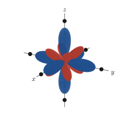
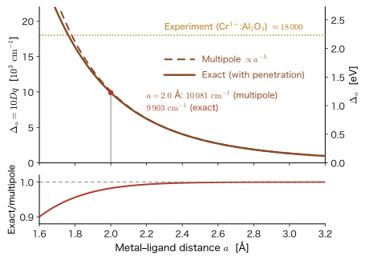
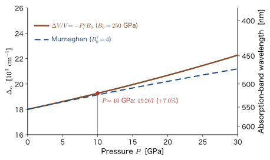
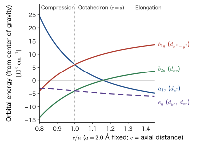
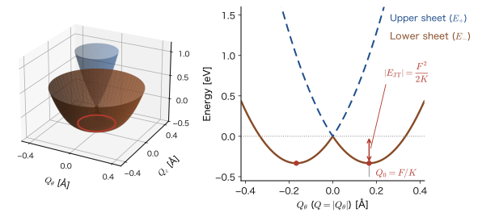

Chapter 44A Single d Electron in a Cubic Field — Splitting into $t_{2g}$ and $e_g$
What happens to the five 3d orbitals inside a crystal? In an isolated atom the five 3d orbitals have the same energy (the same degeneracy as in the hydrogen atom, Chapter 16), but in a crystal they are surrounded by oxide ions $\mathrm{O^{2-}}$, so the five levels split into two groups. Because the spacing between the split levels is about the same as the energy of a photon of visible light (about 2 eV), only light of particular colors is absorbed, and ruby looks red and emerald looks green (for the details of color, see Chapter 48). The color, magnetism, catalytic action, and battery-material properties of transition-metal compounds all start from this “splitting of the d levels.”
In this chapter we solve the simplest case of it, without skipping a single line of the equations. Suppose that the 3d orbitals of a metal ion contain just one electron, and that six ligands (ions or molecules) are arranged around the ion at the vertices of a regular octahedron. We approximate the ligands by negative point charges. The electron feels an electrostatic repulsion from the ligands, but in classical physics (the electrostatics of AD 03, Chapter 35, Section 35.1 (in Japanese)) this would amount to nothing more than “the farther the electron is from the position of a point charge, the weaker the repulsion.” In quantum mechanics the electron is not at a single point; it is spread out in the form of the orbital $\lvert\psi\rvert^2$, and its energy is determined by $\int\psi^*\hat{V}\psi\,\dd\tau$. Therefore the orbital orientation becomes the issue. An orbital pointing toward a ligand loses, and an orbital pointing between the ligands gains. Calculating this “gain and loss due to orientation” quantitatively by degenerate perturbation theory (Chapter 28) is the content of this chapter.
The answer turns out to be surprisingly simple. The fivefold degenerate d level splits into a twofold $e_g$ level and a threefold $t_{2g}$ level; $e_g$ is shifted by $+6Dq$ and $t_{2g}$ by $-4Dq$, and their spacing ($10Dq$) is inversely proportional to the fifth power of the distance $a$ to the ligands. This result is the starting point for the later chapters: group theory (Chapter 45), high spin and low spin in $d^n$ configurations (Chapter 46), many-electron terms and Tanabe–Sugano diagrams (Chapter 47), and d–d transitions and color (Chapter 48).
- The five real d orbitals, and the meaning of the names $e_g$ and $t_{2g}$. How to set up the one-electron potential $\hat{V}$ when the ligands are regarded as negative point charges
- Expanding the potential of the six point charges in $r/a$, and the fact that, because of the cubic symmetry, only the $k=0$ (constant) and $k=4$ terms remain: $V_4=\dfrac{35}{4a^5}\dfrac{qe_0^2}{4\pi\varepsilon_0}\left(x^4+y^4+z^4-\dfrac35r^4\right)$
- The fact that the 5×5 secular equation (degenerate perturbation theory) becomes diagonal; $E(e_g)=+6Dq$, $E(t_{2g})=-4Dq$, $\Delta_o\equiv10Dq=\dfrac53\dfrac{qe_0^2\langle r^4\rangle}{4\pi\varepsilon_0a^5}$, and the center-of-gravity rule
- A numerical example with $Z_{\mathrm{eff}}=7$, $a=2.0$ Å, $q=2$ (about $1.0\times10^4\ \mathrm{cm^{-1}}$; $\mathrm{cm^{-1}}$ is a unit of wavenumber, and $1\ \mathrm{eV}=8065.5\ \mathrm{cm^{-1}}$; Section 44.4) and a comparison with experimental values; $\Delta_o\propto a^{-5}$ and the effect of pressure; the limitations of the point-charge model
- Cubic coordination and tetrahedral coordination ($\Delta_t=\tfrac49\Delta_o$), and the four levels in tetragonal symmetry $D_{4h}$ ($Ds$, $Dt$)
- The Jahn–Teller effect: when the degenerate $e_g$ orbitals are occupied unequally by electrons, the crystal distorts spontaneously. The $E\otimes e$ model and $E_{\mathrm{JT}}=-F^2/2K$ (the magnitude of the stabilization is $F^2/2K$)
Source notes: Yasuhide Mochizuki, “Physics Notes: Quantum Mechanics 3,” pp. 67–68.
44.1 A Single Electron in a Cubic Field — Six Point Charges Arranged in an Octahedron
44.1.1 Review: hydrogen-like 3d orbitals
We use the hydrogen-like 3d states (principal quantum number $n=3$, azimuthal quantum number $l=2$) prepared in the previous chapter (Chapter 43). Because of shielding by the inner electrons (Chapter 18), the nuclear charge felt by a 3d electron of a metal ion is not the atomic number but a much smaller effective nuclear charge $Z_{\mathrm{eff}}$. The energy of the 3d states is $E_3=-13.6\ \mathrm{eV}\times Z_{\mathrm{eff}}^2/3^2$, which is independent of the magnetic quantum number $m=-2,-1,0,1,2$. The wave function is the product of a radial part and an angular part, $R_{32}(r)\,Y_2^m(\theta,\varphi)$, and the radial part $R_{32}(r)\propto\rho^2e^{-\rho/3}$ ($\rho=Z_{\mathrm{eff}}r/a_0$) was found in the previous chapter (Section 43.4.1). All five states have the same energy; that is, they are fivefold degenerate.
The definition of the five real d orbitals and their correspondence with $Y_2^m$ were given in the previous chapter (Definition 43.1 in Section 43.4.3). Here we introduce the forms used in the calculations of this chapter, together with the names $e_g$ and $t_{2g}$. Let $\bm{n}=\bm{r}/r=(n_x,n_y,n_z)$ be the unit vector in the radial direction ($n_x=\sin\theta\cos\varphi$, and so on).
Definition 44.1: Real d orbitals and $e_g$, $t_{2g}$
The following five functions are called the real d orbitals (they are the same as Definition 43.1 of the previous chapter; each is $R_{32}(r)$ multiplied by an angular part, and the angular parts are normalized on the sphere):
$$ \begin{aligned} d_{z^2}&=R_{32}(r)\sqrt{\tfrac{5}{16\pi}}\,(3n_z^2-1), \\ d_{x^2-y^2}&=R_{32}(r)\sqrt{\tfrac{15}{16\pi}}\,(n_x^2-n_y^2), \\ d_{xy}&=R_{32}(r)\sqrt{\tfrac{15}{4\pi}}\,n_xn_y, \\ d_{yz}&=R_{32}(r)\sqrt{\tfrac{15}{4\pi}}\,n_yn_z, \\ d_{zx}&=R_{32}(r)\sqrt{\tfrac{15}{4\pi}}\,n_zn_x. \end{aligned} $$Of these, the two functions $d_{z^2}$ and $d_{x^2-y^2}$ are called the $e_g$ orbitals, and the three functions $d_{xy}$, $d_{yz}$, $d_{zx}$ are called the $t_{2g}$ orbitals.
The meaning of the names. The letters $e$ and $t$ are symbols (Mulliken symbols) for “twofold degenerate orbitals” and “threefold degenerate orbitals.” The subscript $g$ is the initial letter of the German word gerade (even), and indicates an orbital whose sign does not change under inversion about the origin, $\bm{r}\to-\bm{r}$ (the angular part of a d orbital is a quadratic expression in the $n_i$, so it is indeed invariant under inversion). The 2 in $t_{2g}$ is a number that distinguishes this set from another set with a different symmetry that is also called $t_g$ (namely $t_{1g}$). The group-theoretic meaning of these symbols will be defined rigorously in Chapter 45. The orbitals of a single electron are written in lowercase ($e_g$, $t_{2g}$), and the states (terms) of many electrons are written in uppercase ($E_g$, $T_{2g}$) (from Chapter 46 on). Also, the reason why $\{d_{xy},d_{yz},d_{zx}\}$ are grouped into one set and $d_{z^2}$ and $d_{x^2-y^2}$ are grouped into another set will become clear in the calculation of Section 44.3.
44.1.2 Setting up the problem
Around the metal ion (at the origin), six ligands ($\mathrm{O^{2-}}$, $\mathrm{F^-}$, the oxygen atoms of water molecules, etc.) are arranged at the vertices of a regular octahedron (Figure 44.1). The position vectors of the ligands are
$$ \bm{R}_1=(a,0,0),\ \bm{R}_2=(-a,0,0),\ \bm{R}_3=(0,a,0),\ \bm{R}_4=(0,-a,0),\ \bm{R}_5=(0,0,a),\ \bm{R}_6=(0,0,-a) $$where $a$ is the metal–ligand distance, which is about 2 Å ($=2\times10^{-10}\ \mathrm{m}$) in oxides. A ligand is regarded as a point charge with charge $-q\,e_0$ ($e_0$ is the elementary charge and $q$ is the charge number of the ligand; $q=2$ for $\mathrm{O^{2-}}$).
Between the electron (charge $-e_0$) and ligand $i$ (charge $-qe_0$) a repulsive force acts according to Coulomb's law, and its potential energy is $(-e_0)(-qe_0)/(4\pi\varepsilon_0\lvert\bm{r}-\bm{R}_i\rvert)=+qe_0^2/(4\pi\varepsilon_0\lvert\bm{r}-\bm{R}_i\rvert)$ (AD 03, Chapter 35, Section 35.1 (in Japanese)). By the superposition of potentials (Chapter 36, Section 36.8 (in Japanese)), the potential energy due to the six ligands is simply a sum. In what follows we use the abbreviation
\begin{equation} \Lambda\equiv\frac{q\,e_0^2}{4\pi\varepsilon_0} \label{eq:44-Lambda} \end{equation}($\Lambda$ has the dimension of “energy × length”; since $e_0^2/(4\pi\varepsilon_0)=14.3996\ \mathrm{eV}\,\text{Å}$, we have $\Lambda=q\times14.3996\ \mathrm{eV}\,\text{Å}$). The one-electron Hamiltonian of the 3d electron is as follows:
\begin{equation} \hat{H}=\hat{H}_0+\hat{V},\qquad \hat{H}_0=-\frac{\hbar^2}{2m_{\mathrm e}}\nabla^2-\frac{Z_{\mathrm{eff}}e_0^2}{4\pi\varepsilon_0\,r},\qquad \hat{V}(\bm{r})=\Lambda\sum_{i=1}^{6}\frac{1}{\lvert\bm{r}-\bm{R}_i\rvert} \label{eq:44-H} \end{equation}$\hat{H}_0$ is the Hamiltonian that has the hydrogen-like 3d states of the previous section as its eigenstates, and $\hat{V}$ is the field of the ligands. Since $\hat{V}$ is a function of the coordinates $\bm{r}=(x,y,z)$, it is not so much an operator as a mere multiplication.
Formula 44.1: The spacing between $e_g$ and $t_{2g}$ (the conclusion of this chapter; derived in Section 44.3)
For a 3d electron in an octahedral field, the fivefold degenerate level splits into a twofold $e_g$ level and a threefold $t_{2g}$ level, and the spacing between them is
\begin{equation} E(e_g)-E(t_{2g})=\frac{5}{3}\,\frac{q\,e_0^2}{4\pi\varepsilon_0}\,\frac{1}{a^5}\int_0^\infty r^4R_{32}^2(r)\,r^2\,\dd r=\frac53\,\frac{q\,e_0^2\,\langle r^4\rangle}{4\pi\varepsilon_0\,a^5} \label{eq:44-goal} \end{equation}where $\langle r^4\rangle\equiv\int_0^\infty r^4R_{32}^2\,r^2\,\dd r$ is the mean value of $r^4$ over the 3d orbital, and the coefficient $5/3=1.666\cdots\approx1.67$ comes out of the angular integral in Section 44.3.
Eq. \eqref{eq:44-goal} looks simple, but where it comes from (why $1/a^5$, why $5/3$, why the mean value of $r^4$) is not obvious. In Sections 44.2 and 44.3 of this chapter, we derive it line by line. The $1/a^5$ in Eq. \eqref{eq:44-goal} is a constant determined solely by the distance $a$ to the ligands, and is a different quantity from the $r^4$ inside the integral (the fourth power of the electron's position $r$).
Caution: $Z$, $q$, and the $q$ in $Dq$
Three quantities that stand for “charge” appear in this chapter. Do not confuse them. (i) $Z_{\mathrm{eff}}$: the effective nuclear charge of the central metal ion. It determines the attraction felt by the 3d electron. (ii) $q$: the charge number of the ligand (the charge of a ligand is $-qe_0$). It determines the magnitude of $\hat{V}$. (iii) $Dq$: the unit of the splitting between $e_g$ and $t_{2g}$, defined in Section 44.3; it is a historical symbol. It has the form of a product of $D$ and $q$, but this $q$ is not a charge; it is a quantity that originates from the radial integral ($\tfrac{2}{105}\langle r^4\rangle$). In this book we use $Dq$ as a single symbol, and we use $q$ for the charge of a ligand only inside $qe_0^2/(4\pi\varepsilon_0)$ or $\Lambda$.
Discussion: Why is perturbation theory enough?
Is it legitimate to treat the ligand field $\hat{V}$ as a “small perturbation”? For example, for $q=2$ and $a=2.0$ Å, as we will see later, the spherically symmetric part of $\hat{V}$ alone amounts to as much as $6\Lambda/a\approx86$ eV. This is much larger than the ground-state energy of the hydrogen atom ($-13.6$ eV). However, this large part is a constant that raises the five d orbitals by the same amount (Section 44.2), and it does not affect the spacings between levels. The non-spherical part, which determines the spacings, is about 1 eV in terms of the splitting within 3d. The effect of this part in mixing in states other than 3d is small. Since the non-spherical part of $\hat{V}$ consists only of the $l=4$ component $V_4$ (and the components with $l\ge6$) (Section 44.2), the states that $V_4$ connects to 3d ($l=2$) are the even-parity excited states that satisfy the composition rule for angular momenta $\lvert l-l'\rvert\le4\le l+l'$, that is, nd ($n\ge4$, $l'=2$), ng ($n\ge5$, $l'=4$), and ni ($n\ge7$, $l'=6$). On the other hand, connecting to 4s ($l'=0$) would require a $k=2$ term, which is zero for an octahedron, so 4s does not mix in, and 4p has odd parity and is not connected to 3d by the even function $\hat{V}$ (4s and 4p matter through covalent bonding via the ligand orbitals; Section 44.4). Estimating the mixing with nd, ng, and ni by second-order perturbation theory (Chapter 27) (using hydrogen-like orbitals with $Z_{\mathrm{eff}}=7$, $a=2.0$ Å, $q=2$, and counting only the bound states $n\le14$), the splitting within 3d, $\Delta_o=1.25$ eV, is reduced by only about 0.08 eV (about 7%). This is because the spacing from 3d to 4d is large, about 32 eV; since the mixing into the continuum states is not included, this is an order-of-magnitude estimate. Accordingly, in this chapter we use the following approximations.
- We take out only the five degenerate 3d states of $\hat{H}_0$, construct the matrix $V_{mm'}$ of $\hat{V}$ within them, and diagonalize it (first-order degenerate perturbation theory; Chapter 28). We neglect the mixing with states of other $n,l$ (effects of second order and higher).
- The ligands are point charges with no size, and we do not consider the overlap between the orbitals of the metal ion and those of the ligands, or covalent bonding.
The size of the effect of the first approximation is as given above. The limitations of the second approximation (neglecting the overlap with the ligand orbitals and covalent bonding), and the accuracy of the expansion for $r\lt a$ (the effect of penetration, in which the electron goes outside the positions of the ligands), will be examined in Section 44.4. In degenerate perturbation theory, for the five states $\ket{m}$ ($=R_{32}Y_2^m$) we construct the 5×5 matrix $V_{mm'}=\mel{m}{\hat{V}}{m'}$, and solving the secular equation $\det(V_{mm'}-E^{(1)}\delta_{mm'})=0$ gives five first-order energies $E^{(1)}$.
Example 44.1: Distance from the electron to the ligands and the symmetry of $\hat{V}$
When the electron is at $\bm{r}=(0.2a,\,0.1a,\,0.3a)$, find the squared distances $\lvert\bm{r}-\bm{R}_i\rvert^2$ to the six ligands and the value of $\hat{V}$ (in units of $\Lambda/a$). Also verify that $\hat{V}(-\bm{r})=\hat{V}(\bm{r})$ and that $\hat{V}$ is unchanged by the 90° rotation about the $z$ axis, $(x,y,z)\to(-y,x,z)$. For $q=2$ and $a=2.0$ Å, how many eV is $\hat{V}$?
Solution. $\lvert\bm{r}-\bm{R}\rvert^2=(\bm{r}-\bm{R})\cdot(\bm{r}-\bm{R})=r^2-2\bm{r}\cdot\bm{R}+R^2$, and $R=a$. First, $r^2=(0.04+0.01+0.09)a^2=0.14a^2$. For each ligand we use $\bm{r}\cdot\bm{R}_i=\pm ax$ (and so on):
$$ \begin{aligned} \bm{R}_1=(a,0,0):&\ \lvert\bm{r}-\bm{R}_1\rvert^2=(0.14-2\times0.2+1)a^2=0.74a^2, &\bm{R}_2=(-a,0,0):&\ (0.14+0.4+1)a^2=1.54a^2,\\ \bm{R}_3=(0,a,0):&\ (0.14-2\times0.1+1)a^2=0.94a^2, &\bm{R}_4=(0,-a,0):&\ (0.14+0.2+1)a^2=1.34a^2,\\ \bm{R}_5=(0,0,a):&\ (0.14-2\times0.3+1)a^2=0.54a^2, &\bm{R}_6=(0,0,-a):&\ (0.14+0.6+1)a^2=1.74a^2. \end{aligned} $$Writing $1/\lvert\bm{r}-\bm{R}_i\rvert$ in units of $a^{-1}$, we have $1/\sqrt{0.74}=1.1625$, $1/\sqrt{1.54}=0.8058$, $1/\sqrt{0.94}=1.0314$, $1/\sqrt{1.34}=0.8639$, $1/\sqrt{0.54}=1.3608$, and $1/\sqrt{1.74}=0.7581$, so the sum is $\hat{V}=5.9825\,\Lambda/a$. For $q=2$ and $a=2.0$ Å, $\Lambda/a=2\times14.3996\ \mathrm{eV}\,\text{Å}/2.0\ \text{Å}=14.40\ \mathrm{eV}$, so $\hat{V}=86.15\ \mathrm{eV}$.
Under the inversion $\bm{r}\to-\bm{r}$, the sign of $\bm{r}\cdot\bm{R}_i$ changes, so $\lvert\bm{r}-\bm{R}_1\rvert^2$ and $\lvert\bm{r}-\bm{R}_2\rvert^2$ are interchanged (and likewise for $\bm{R}_3\leftrightarrow\bm{R}_4$ and $\bm{R}_5\leftrightarrow\bm{R}_6$). The set of the six squared distances $\{0.74,1.54,0.94,1.34,0.54,1.74\}a^2$ is unchanged, so the sum $\hat{V}$ is unchanged. The point after the 90° rotation is $(-0.1a,0.2a,0.3a)$, and the same calculation gives $\lvert\bm{r}'-\bm{R}_i\rvert^2/a^2=1.34,\ 0.94,\ 0.74,\ 1.54,\ 0.54,\ 1.74$, the same six numbers, differing only in their order. Therefore the value of $\hat{V}$ is the same. This is because the set of ligands is mapped onto itself by the inversion and by the 90° rotation (the ligands are merely interchanged among themselves).
44.2 Expansion of the Cubic-Symmetric Potential — $x^4+y^4+z^4-\tfrac35r^4$
The $\hat{V}$ of Eq. \eqref{eq:44-H} is the sum of six terms $1/\lvert\bm{r}-\bm{R}_i\rvert$. Integrating this directly over the 3d orbitals would be laborious, but by using the fact that the electron lies well inside the ligands ($r\lt a$), we can expand it in a power series in $r/a$. Then, thanks to the octahedral symmetry, most of the infinitely many terms vanish, and only two terms remain.
Math Tool: The generating function of the Legendre polynomials
The Legendre polynomials $P_k(u)$ (University Mathematics, Chapter 40, Section 40.4) can be defined, for $\lvert t\rvert\lt1$, as the coefficient of $t^k$ in the expansion
\begin{equation} \frac{1}{\sqrt{1-2ut+t^2}}=\sum_{k=0}^{\infty}P_k(u)\,t^k \label{eq:44-gen} \end{equation}(the generating function). Let us check the low-order terms. Substituting $x=-2ut+t^2$ into $(1+x)^{-1/2}=1-\tfrac12x+\tfrac38x^2-\cdots$ gives $1+\tfrac12(2ut-t^2)+\tfrac38(2ut-t^2)^2+\cdots=1+ut+\tfrac12(3u^2-1)t^2+\cdots$, which yields $P_0=1$, $P_1=u$, and $P_2=\tfrac12(3u^2-1)$. The higher-order terms are obtained from Rodrigues' formula $P_k(u)=\dfrac{1}{2^kk!}\dfrac{\mathrm{d}^k}{\mathrm{d}u^k}(u^2-1)^k$. For example, for $k=4$, differentiating $(u^2-1)^4=u^8-4u^6+6u^4-4u^2+1$ four times gives $1680u^4-1440u^2+144$, and dividing this by $2^44!=384$ gives $P_4$. The $P_3$, $P_4$, and $P_6$ that we use below are given by
$$ P_3(u)=\tfrac12(5u^3-3u),\quad P_4(u)=\tfrac18(35u^4-30u^2+3),\quad P_6(u)=\tfrac1{16}(231u^6-315u^4+105u^2-5) $$The odd-order ones satisfy $P_k(-u)=-P_k(u)$ (odd functions), and the even-order ones satisfy $P_k(-u)=P_k(u)$ (even functions).
Derivation: Expansion of the field of six point charges
(a) A single point charge. Consider a point charge at distance $R$ from the origin, and let $\gamma$ be the angle between it and the position $\bm{r}$ of the electron. By the law of cosines, $\lvert\bm{r}-\bm{R}\rvert^2=R^2-2rR\cos\gamma+r^2$. Letting $t=r/R$ and $u=\cos\gamma$, we have $\lvert\bm{r}-\bm{R}\rvert=R\sqrt{1-2ut+t^2}$, so by Eq. \eqref{eq:44-gen} (for $r\lt R$)
\begin{equation} \frac{1}{\lvert\bm{r}-\bm{R}\rvert}=\frac1R\sum_{k=0}^{\infty}\left(\frac rR\right)^kP_k(\cos\gamma)=\sum_{k=0}^{\infty}\frac{r^k}{R^{k+1}}P_k(\cos\gamma) \label{eq:44-legendre} \end{equation}(b) Six ligands. Let $R=a$, and use the fact that the ligand directions $\bm{R}_i/a$ are $\pm\bm{e}_x,\pm\bm{e}_y,\pm\bm{e}_z$. Letting $\bm{n}=\bm{r}/r=(n_x,n_y,n_z)$ be the unit vector in the direction of the electron, $\cos\gamma_i=\bm{n}\cdot\bm{R}_i/a$ is one of $\pm n_x,\ \pm n_y,\ \pm n_z$. Summing Eq. \eqref{eq:44-legendre} over the six ligands gives
\begin{equation} \hat{V}=\Lambda\sum_{k=0}^{\infty}\frac{r^k}{a^{k+1}}S_k(\bm{n}),\qquad S_k(\bm{n})\equiv\sum_{i=1}^{6}P_k(\cos\gamma_i)=\sum_{s=\pm1}\bigl[P_k(sn_x)+P_k(sn_y)+P_k(sn_z)\bigr] \label{eq:44-Sk} \end{equation}(c) Computing $S_k$ for each $k$.
- $k=0$: since $P_0=1$, $S_0=6$.
- $k$ odd: since $P_k(-u)=-P_k(u)$, the contributions of the ligands at $+\bm{R}$ and $-\bm{R}$ cancel each other, so $S_1=S_3=S_5=\cdots=0$.
- $k=2$: adding the six values $P_2(\pm n_i)=\tfrac12(3n_i^2-1)$ gives $S_2=2\times\tfrac12\bigl[3(n_x^2+n_y^2+n_z^2)-3\bigr]=3\cdot1-3=0$. Here we used $n_x^2+n_y^2+n_z^2=1$.
- $k=4$: adding the six values $P_4(\pm n_i)=\tfrac18(35n_i^4-30n_i^2+3)$: $$ S_4=\frac{2}{8}\Bigl[35(n_x^4+n_y^4+n_z^4)-30(n_x^2+n_y^2+n_z^2)+3\times3\Bigr]=\frac14\Bigl[35\,s_4-30+9\Bigr]=\frac{35s_4-21}{4},\qquad s_4\equiv n_x^4+n_y^4+n_z^4 $$
- $k=6$: adding the six values $P_6(\pm n_i)=\tfrac1{16}(231n_i^6-315n_i^4+105n_i^2-5)$ gives $S_6=\tfrac{2}{16}\bigl[231s_6-315s_4+105\cdot1-5\cdot3\bigr]=\tfrac18(231s_6-315s_4+90)=\tfrac38\bigl(77s_6-105s_4+30\bigr)$ ($s_6\equiv n_x^6+n_y^6+n_z^6$; we used $n_x^2+n_y^2+n_z^2=1$).
(d) Simplifying the $k=4$ term. Since $r^4s_4=x^4+y^4+z^4$, the $k=4$ term is
$$ \Lambda\frac{r^4}{a^5}\cdot\frac{35s_4-21}{4}=\frac{35\Lambda}{4a^5}\left(r^4s_4-\frac{21}{35}r^4\right)=\frac{35\Lambda}{4a^5}\left(x^4+y^4+z^4-\frac35r^4\right) $$(e) The $k=6$ term. We have $\Lambda\dfrac{r^6}{a^7}S_6=\dfrac{3\Lambda r^6}{8a^7}\bigl(77s_6+30-105s_4\bigr)$, which is the $V_6$ of Theorem 44.1 ($V_6$ does not contribute to the matrix elements between 3d orbitals; see the box below).
∎
Theorem 44.1: Expansion of the octahedral field
The potential energy of an electron at a point with $r\lt a$ due to six point charges (charge $-qe_0$, distance $a$) at the vertices of a regular octahedron is, with $\Lambda=qe_0^2/(4\pi\varepsilon_0)$, given by
\begin{equation} \hat{V}=\underbrace{\frac{6\Lambda}{a}}_{V_0}+\underbrace{\frac{35\Lambda}{4a^5}\left(x^4+y^4+z^4-\frac35r^4\right)}_{V_4}+V_6+V_8+\cdots \label{eq:44-Vexp} \end{equation}(Here $V_0,V_4,\ldots$ are the individual terms of the expansion; they are operators that merely multiply by a function of the coordinates, so they carry no hat.) The terms with $k=1,2,3,5,7,\ldots$ vanish. The $k=6$ term is $V_6=\dfrac{3\Lambda r^6}{8a^7}\bigl(77s_6+30-105s_4\bigr)$ ($s_6\equiv n_x^6+n_y^6+n_z^6$), and the terms with $k\ge6$ contribute nothing at all to the matrix elements between 3d orbitals (see the box below).
Math Tool: Why only the terms with $k\le4$ contribute to matrix elements between d orbitals
The matrix element between 3d orbitals, $\mel{R_{32}Y_2^m}{\hat{V}_k}{R_{32}Y_2^{m'}}$, splits into a radial part and an angular part, and the angular part has the form $\int Y_2^{m*}\,S_k(\bm{n})\,Y_2^{m'}\,\dd\Omega$. Since the angular part of a d orbital is a quadratic expression in $n_x,n_y,n_z$, the product $Y_2^{m*}Y_2^{m'}$ is (on the sphere $n_x^2+n_y^2+n_z^2=1$) a polynomial of degree at most 4. On the other hand, $S_k(\bm{n})$ is a spherical harmonic of degree $k$ (a linear combination of the $Y_k^q$; the addition theorem for Legendre functions), and $Y_k^q$ is orthogonal to $Y_l^{q'}$ with $k\ne l$. Since a polynomial of degree 4 or lower can be expanded using only spherical harmonics with $l\le4$, all the integrals with terms of $k\ge5$ vanish. For odd $k$, the integral also vanishes because of the inversion symmetry (d orbitals are even functions). Therefore only $k=0,2,4$ contribute to the matrix elements within 3d, and the terms with $k=6$ and above are zero not as an approximation but exactly. For f orbitals ($l=3$), terms up to $k=6$ contribute, and for p orbitals ($l=1$), terms up to $k=2$ contribute.
44.2.1 Meaning of each term
The $k=0$ term $V_0=6\Lambda/a$. This is a constant that depends on neither $r$ nor the direction. Physically, it equals the electric potential inside a spherical shell of radius $a$ centered at the origin, over which the six charges have been spread uniformly (AD 03, Chapter 36, Section 36.5 (in Japanese): inside a uniformly charged spherical shell the potential is constant, and its value is (total charge)$/(4\pi\varepsilon_0a)$). A constant merely shifts the energies of the five d orbitals by the same amount and does not change the spacings between levels.
The vanishing of the $k=2$ term. The $k=2$ term is the term due to the “quadrupole moment” of the charge distribution, and it contains components that single out the $x,y,z$ axes (for example, $3z^2-r^2$). In an octahedron the three axes $x,y,z$ are completely equivalent, so such components vanish. When the ligands form a square (four ligands on the $x,y$ axes), only the $z$ axis becomes special, so the $k=2$ term reappears (Section 44.5 and Exercise 44.1).
The $k=4$ term $V_4$. Writing $V_4$ with $r=r\bm{n}$ gives $V_4=\dfrac{35\Lambda r^4}{4a^5}\bigl(n_x^4+n_y^4+n_z^4-\tfrac35\bigr)$. When the electron is in an axis direction (the direction of a ligand), $\bm{n}=(1,0,0)$ and $s_4=1$, and the content of the parentheses is $\tfrac{35}{4}(1-\tfrac35)=\tfrac72$, which is positive (the electron's energy rises). In the body-diagonal direction $\bm{n}=(1,1,1)/\sqrt3$, $s_4=3\times\tfrac19=\tfrac13$, and $\tfrac{35}{4}(\tfrac13-\tfrac35)=-\tfrac73$, which is negative. In the face-diagonal direction $(1,1,0)/\sqrt2$, $s_4=\tfrac12$ and the value is $-\tfrac78$. When the electron is in a direction approaching a ligand, the energy is high, and when it is in a direction far from the ligands (the eight body-diagonal directions), the energy is low. This angular dependence is shown in Figure 44.2.

Intuition: $V_4$ is a “spherical harmonic with $l=4$ and cubic symmetry”
The angular part of $V_4$ is a special linear combination of the spherical harmonics $Y_4^m$ of degree 4. Indeed,
\begin{equation} x^4+y^4+z^4-\frac35r^4=\frac{4\sqrt\pi}{15}\,r^4\left[Y_4^0+\sqrt{\frac{5}{14}}\left(Y_4^4+Y_4^{-4}\right)\right] \label{eq:44-cubicharm} \end{equation}holds (the combination inside the brackets is called a “cubic harmonic”). Let us check it. Using $Y_4^0=\dfrac{3}{16\sqrt\pi}(35\cos^4\theta-30\cos^2\theta+3)$ and $Y_4^{\pm4}=\dfrac{3}{16}\sqrt{\dfrac{35}{2\pi}}\sin^4\theta\,e^{\pm4i\varphi}$, we compare the two sides in three directions ($r=1$). (i) $\bm{n}=(0,0,1)$: the left-hand side is $1-\tfrac35=\tfrac25$. On the right-hand side, $Y_4^0=\tfrac{3}{2\sqrt\pi}$ and $Y_4^{\pm4}=0$, so we get $\tfrac{4\sqrt\pi}{15}\cdot\tfrac{3}{2\sqrt\pi}=\tfrac25$. (ii) $\bm{n}=(1,0,0)$ ($\theta=\pi/2$, $\varphi=0$): the left-hand side is $\tfrac25$. On the right-hand side, $Y_4^0=\tfrac{9}{16\sqrt\pi}$ and $Y_4^4+Y_4^{-4}=\tfrac38\sqrt{\tfrac{35}{2\pi}}$; since $\sqrt{\tfrac5{14}}\sqrt{\tfrac{35}{2\pi}}=\tfrac{5}{2\sqrt\pi}$, the expression inside the brackets is $\tfrac{9}{16\sqrt\pi}+\tfrac{15}{16\sqrt\pi}=\tfrac{3}{2\sqrt\pi}$, which again gives $\tfrac25$. (iii) $\bm{n}=(1,1,1)/\sqrt3$ ($\cos^2\theta=\tfrac13$, $\sin^4\theta=\tfrac49$, and $e^{\pm4i\varphi}=-1$ for $\varphi=\pi/4$): the left-hand side is $\tfrac13-\tfrac35=-\tfrac4{15}$. On the right-hand side, $Y_4^0=-\tfrac{7}{12\sqrt\pi}$ and $\sqrt{\tfrac5{14}}(Y_4^4+Y_4^{-4})=-\tfrac{5}{12\sqrt\pi}$, so the expression inside the brackets is $-\tfrac1{\sqrt\pi}$, and $\tfrac{4\sqrt\pi}{15}\times(-\tfrac1{\sqrt\pi})=-\tfrac4{15}$. The two sides agree at all three points, and we have also confirmed the identity numerically for other directions. $Y_4^0$ has a shape in which the $z$ axis is special (a lobe elongated along the vertical), while $Y_4^{\pm4}$ have lobes along the $x$ and $y$ axes. Mixing these three with the weight $\sqrt{5/14}$ makes the $x,y,z$ axes completely equivalent. In other words, among the $l=4$ spherical harmonics, the octahedral field has only the single component that is “invariant under all the symmetry operations of the octahedron.” In the language of group theory, this is the component of the totally symmetric representation $A_{1g}$, and this is why $V_4$ does not lift the degeneracy of the 3d orbitals completely but splits them into two sets, “$e_g$ and $t_{2g}$” (Chapter 45). Also, the average of $V_4$ over the whole sphere is 0 (the average of $n_x^4$ over the sphere is $1/5$, so $\tfrac15\times3-\tfrac35=0$). This reflects the fact that $V_4$ contains only an $l=4$ component and has no $l=0$ (spherically symmetric) component.
Example 44.2: Magnitude of the $k=0$ term
For $q=2$ ($\mathrm{O^{2-}}$) and $a=2.0$ Å, how many eV is $V_0=6\Lambda/a$? Compare this magnitude with the ground-state energy of the hydrogen atom, and explain why this constant is irrelevant to the splitting of the levels.
Solution. Since $e_0^2/(4\pi\varepsilon_0)=14.3996\ \mathrm{eV}\,\text{Å}$ ($=E_{\mathrm h}a_0=27.2114\ \mathrm{eV}\times0.529177\ \text{Å}$), we have $\Lambda=2\times14.3996=28.799\ \mathrm{eV}\,\text{Å}$. Hence
$$ V_0=\frac{6\Lambda}{a}=\frac{6\times28.799\ \mathrm{eV}\,\text{Å}}{2.0\ \text{Å}}=86.4\ \mathrm{eV} $$This is more than six times the magnitude of the ground-state energy of the hydrogen atom, $-13.6$ eV. However, $V_0$ is a constant that depends neither on $r$ nor on the direction, so the eigenstates of $\hat{H}_0+V_0$ remain the eigenstates of $\hat{H}_0$, and all the eigenvalues are simply raised by $V_0$. Since the energies of the five 3d orbitals shift by the same amount, the spacings between the levels do not change. Note also that in a real crystal this constant is treated as part of the electrostatic potential created not only by the ligands but by all the surrounding ions (the Madelung potential, i.e., the potential created by the sum of the point charges of the whole crystal), and it does not show up in color or magnetism.
Example 44.3: Checking the convergence of the expansion numerically
When the electron is at $\bm{r}=(0.3a,\,0.2a,\,0.1a)$, calculate $V_0+V_4$ and $V_6$ in Eq. \eqref{eq:44-Vexp}, and compare them with the exact value obtained in the same way as in Example 44.1 (in units of $\Lambda/a$).
Solution. We have $r^2=(0.09+0.04+0.01)a^2=0.14a^2$, $r^4=0.0196a^4$, and $x^4+y^4+z^4=(0.0081+0.0016+0.0001)a^4=0.0098a^4$. The expression inside the brackets of $V_4$ is $0.0098-\tfrac35\times0.0196=0.0098-0.01176=-0.00196$ (in units of $a^4$), so
$$ V_4=\frac{35}{4}\times(-0.00196)\,\frac{\Lambda}{a}=-0.01715\,\frac{\Lambda}{a},\qquad V_0+V_4=(6-0.01715)\frac\Lambda a=5.98285\,\frac\Lambda a $$For the $k=6$ term, from $x^6+y^6+z^6=(0.000729+0.000064+0.000001)a^6=0.000794a^6$ and $r^6=0.002744a^6$ we obtain $s_6=0.28936$, and $s_4=0.5$, so $V_6=\tfrac38\times r^6/a^6\times(77\times0.28936+30-105\times0.5)\,\Lambda/a=\tfrac38\times0.002744\times(-0.2193)\,\Lambda/a=-0.000226\,\Lambda/a$. Therefore $V_0+V_4+V_6=5.98262\,\Lambda/a$.
The exact value is $5.98251\,\Lambda/a$, the same as in Example 44.1, because the interchange of coordinates $(0.3,0.2,0.1)\to(0.2,0.1,0.3)$ merely amounts to an interchange of ligands. With $V_0+V_4$ alone, the difference from the exact value is $3.4\times10^{-4}$ (relative error $6\times10^{-5}$), and including $V_6$ reduces it to $1.1\times10^{-4}$. As long as the electron is near the origin ($r\approx0.37a$), the expansion converges quickly. Also, the part that is not spherically symmetric, $V_4$ ($-0.017$), is only 0.3% of the constant part (6), yet it is this small part that determines the spacing of the levels.
(2) Checking the derivation. Let us verify $S_4=\tfrac14(35s_4-21)$ by calculating directly from the sum of the $P_4$. In the direction $(1,0,0)$ (the direction of a ligand), of the six $\cos\gamma_i$, two are $\pm1$ and four are $0$, so from $P_4(\pm1)=1$ and $P_4(0)=\tfrac38$ we get $S_4=2\times1+4\times\tfrac38=\tfrac72$. This agrees with $\tfrac14(35\cdot1-21)=\tfrac72$ from the formula. In the direction $(1,1,1)/\sqrt3$ (the body diagonal), all six $\cos\gamma_i$ are $\pm1/\sqrt3$, so from $P_4(\pm\tfrac1{\sqrt3})=\tfrac18\bigl(\tfrac{35}9-10+3\bigr)=-\tfrac7{18}$ we get $S_4=6\times(-\tfrac7{18})=-\tfrac73$. This agrees with $\tfrac14(35\cdot\tfrac13-21)=-\tfrac73$ from the formula. These two values are exactly the value $+\tfrac72$ in the axis direction and the value $-\tfrac73$ in the body-diagonal direction (in units of $\Lambda r^4/a^5$) found in Section 44.2.1.
44.3 The 5×5 Secular Equation — Splitting into $e_g$ and $t_{2g}$, and $Dq$
44.3.1 Assembling the matrix elements
Following first-order degenerate perturbation theory (Chapter 28), we form the matrix of $\hat{V}$ within the five degenerate states $\{d_{z^2},d_{x^2-y^2},d_{xy},d_{yz},d_{zx}\}$ (Definition 44.1). If we use real orbitals, the matrix is also real symmetric. The matrix elements can be computed by separating the radial part $R_{32}(r)$ and the angular part $\Omega_i(\bm{n})$ (the angular part in Definition 44.1): $d_i=R_{32}(r)\,\Omega_i(\bm{n})$. Substituting Eq. \eqref{eq:44-Vexp} and using the fact that the terms with $k=2$ and $k\ge6$ vanish (Section 44.2), we obtain
\begin{equation} V_{ij}\equiv\mel{d_i}{\hat{V}}{d_j}=\frac{6\Lambda}{a}\,\delta_{ij}+\frac{35\Lambda}{4a^5}\,\langle r^4\rangle\,A_{ij},\qquad A_{ij}\equiv\int\Omega_i(\bm{n})\,W(\bm{n})\,\Omega_j(\bm{n})\,\dd\Omega \label{eq:44-Vij} \end{equation}where $\dd\Omega=\sin\theta\,\dd\theta\,\dd\varphi$ is the area element on the unit sphere, $W(\bm{n})\equiv n_x^4+n_y^4+n_z^4-\tfrac35$ is the angular part of $V_4$, and $\langle r^4\rangle=\int_0^\infty r^4R_{32}^2\,r^2\,\dd r$ is the radial integral. For the first term we used $\int\Omega_i\Omega_j\dd\Omega=\delta_{ij}$ (orthonormality of the orbitals). Because the radial and angular integrals separate completely, the form of the 5×5 matrix is determined by the angular integrals $A_{ij}$ alone, and the radial part (that is, the kind of atom, $Z_{\mathrm{eff}}$) only sets the overall magnitude. For this reason, the splitting pattern of $e_g$ and $t_{2g}$ does not depend on the detailed shape of the 3d orbitals; it is determined by the symmetry of the octahedron alone.
44.3.2 All off-diagonal elements vanish
First we show that the elements $A_{ij}$ with $i\ne j$ vanish. The idea is a combination of two facts: “the value of an integral does not change if we rename the integration variables,” and “$W$ is invariant under sign reversal or interchange of the coordinates.”
Derivation: $A_{ij}=0$ ($i\ne j$)
(1) Signs under reflections. $W=n_x^4+n_y^4+n_z^4-\tfrac35$ does not change under $n_x\to-n_x$, under $n_y\to-n_y$, or under $n_z\to-n_z$ (because of the fourth powers). The value of an integral over the sphere does not change if we replace the integration variable by $n_x\to-n_x$. Therefore the matrix element $A_{ij}$ between an orbital whose sign is reversed by $n_x\to-n_x$ and an orbital whose sign is not reversed equals “minus itself,” and must be 0. The signs that the angular part of each orbital acquires under the three reflections $(n_x\to-n_x,\ n_y\to-n_y,\ n_z\to-n_z)$ are as follows:
| Orbital | $n_x\to-n_x$ | $n_y\to-n_y$ | $n_z\to-n_z$ |
|---|---|---|---|
| $d_{z^2}$, $d_{x^2-y^2}$ | $+$ | $+$ | $+$ |
| $d_{xy}$ ($\propto n_xn_y$) | $-$ | $-$ | $+$ |
| $d_{yz}$ ($\propto n_yn_z$) | $+$ | $-$ | $-$ |
| $d_{zx}$ ($\propto n_zn_x$) | $-$ | $+$ | $-$ |
The sets of signs of $d_{xy}$, $d_{yz}$, and $d_{zx}$ differ from one another, and also from that of the pair $\{d_{z^2},d_{x^2-y^2}\}$. Therefore all elements among these three $t_{2g}$ orbitals, and all elements between $t_{2g}$ and $e_g$, vanish.
(2) Between $d_{z^2}$ and $d_{x^2-y^2}$. These two have the same signs under the reflections, so (1) cannot eliminate the element. We therefore use the interchange of $x$ and $y$, $n_x\leftrightarrow n_y$ (reflection in the plane $x=y$). $W$ is invariant under $n_x\leftrightarrow n_y$, and so is the angular part $3n_z^2-1$ of $d_{z^2}$, but the angular part $n_x^2-n_y^2$ of $d_{x^2-y^2}$ changes sign. Hence $A_{z^2,\,x^2-y^2}=-A_{z^2,\,x^2-y^2}$, that is, 0.
∎
Example 44.4: Checking the off-diagonal elements in integral form
Verify $A_{xy,\,yz}=0$ and $A_{z^2,\,x^2-y^2}=0$ by writing out the integrands.
Solution. $A_{xy,\,yz}=\sqrt{\tfrac{15}{4\pi}}\sqrt{\tfrac{15}{4\pi}}\int n_xn_y\cdot n_yn_z\,W\,\dd\Omega=\dfrac{15}{4\pi}\int n_x\,n_y^2\,n_z\,W\,\dd\Omega$. Of the factors of the integrand, $n_y^2$ and $W$ are invariant under $n_x\to-n_x$, but $n_x$ changes sign, so the integrand is an odd function of $n_x$. Since the sphere maps onto itself under $n_x\to-n_x$, the integral is 0.
$A_{z^2,\,x^2-y^2}=\sqrt{\tfrac{5}{16\pi}}\sqrt{\tfrac{15}{16\pi}}\int(3n_z^2-1)(n_x^2-n_y^2)\,W\,\dd\Omega$. If we rename the integration variables by $n_x\leftrightarrow n_y$, then $(3n_z^2-1)$ and $W$ do not change and $(n_x^2-n_y^2)\to-(n_x^2-n_y^2)$, so the integral $=-$ the integral. Hence it is 0.
44.3.3 Calculating the diagonal elements
Next we compute the diagonal elements $A_{ii}$. Since $d_{z^2}$ is a function of $\theta$ only, it can be integrated easily. For the other orbitals, we use averages of monomials on the unit sphere.
Math Tool: Averages of monomials on a sphere
We write the average over the unit sphere as $\langle\cdots\rangle_\Omega=\frac{1}{4\pi}\int\cdots\dd\Omega$. If any of $n_x,n_y,n_z$ appears to an odd power, the average is 0 by inversion symmetry; if all of them appear to even powers, it is
\begin{equation} \bigl\langle n_x^{2\alpha}\,n_y^{2\beta}\,n_z^{2\gamma}\bigr\rangle_\Omega=\frac{(2\alpha-1)!!\,(2\beta-1)!!\,(2\gamma-1)!!}{(2\alpha+2\beta+2\gamma+1)!!} \label{eq:44-momf} \end{equation}(with $(-1)!!=1$ and $(2n-1)!!=(2n-1)(2n-3)\cdots3\cdot1$). This is derived by computing $\int x^{2\alpha}y^{2\beta}z^{2\gamma}e^{-r^2}\dd^3r$ in three-dimensional space in two ways and comparing them: in Cartesian coordinates it gives $\Gamma(\alpha+\tfrac12)\Gamma(\beta+\tfrac12)\Gamma(\gamma+\tfrac12)$, and in polar coordinates it gives $\langle\cdots\rangle_\Omega\times4\pi\int_0^\infty r^{2s+2}e^{-r^2}\dd r$ ($s=\alpha+\beta+\gamma$) (using the Gaussian integral and the formula for the $\Gamma$ function, $\Gamma(n+\tfrac12)=\dfrac{(2n-1)!!}{2^n}\sqrt\pi$). For example,
$$ \langle n_x^2\rangle=\tfrac13,\quad \langle n_x^4\rangle=\tfrac15,\quad \langle n_x^2n_y^2\rangle=\tfrac1{15},\quad \langle n_x^6n_y^2\rangle=\tfrac1{63},\quad \langle n_x^8\rangle=\tfrac19,\quad \langle n_x^4n_y^4\rangle=\tfrac1{105},\quad \langle n_x^2n_y^2n_z^4\rangle=\tfrac1{315} $$The first three can also be checked as follows: $\langle n_z^4\rangle=\tfrac12\int_{-1}^1u^4\dd u=\tfrac15$ ($u=\cos\theta$), and from the average of $1=(n_x^2+n_y^2+n_z^2)^2$ we get $1=3\langle n_x^4\rangle+6\langle n_x^2n_y^2\rangle$, so $\langle n_x^2n_y^2\rangle=\tfrac16(1-\tfrac35)=\tfrac1{15}$.
Derivation: The values of $A_{ii}$
(1) $d_{z^2}$. We have $\Omega_{z^2}^2=\tfrac{5}{16\pi}(3n_z^2-1)^2$ and $\dd\Omega=\dd u\,\dd\varphi$ ($u=\cos\theta$), and the part of $W$ that depends on $\varphi$ is $n_x^4+n_y^4=\sin^4\theta\,(\cos^4\varphi+\sin^4\varphi)$. Averaging over $\varphi$ from 0 to $2\pi$, the averages of $\cos^4\varphi$ and $\sin^4\varphi$ are both $\tfrac38$, so this becomes $\tfrac34\sin^4\theta=\tfrac34(1-u^2)^2$. Hence (the $\varphi$ integral gives $2\pi$)
$$ W\to\tfrac34(1-u^2)^2+u^4-\tfrac35=\tfrac74u^4-\tfrac32u^2+\tfrac3{20},\qquad A_{z^2z^2}=2\pi\cdot\frac{5}{16\pi}\int_{-1}^{1}(3u^2-1)^2\Bigl(\tfrac74u^4-\tfrac32u^2+\tfrac3{20}\Bigr)\dd u $$We expand the integrand. Multiplying by $(3u^2-1)^2=9u^4-6u^2+1$ gives
$$ \tfrac{63}{4}u^8-24u^6+\tfrac{121}{10}u^4-\tfrac{12}{5}u^2+\tfrac{3}{20} $$(the coefficient of $u^6$ is $-\tfrac{27}{2}-\tfrac{21}{2}=-24$, that of $u^4$ is $\tfrac{27}{20}+9+\tfrac74=\tfrac{121}{10}$, and that of $u^2$ is $-\tfrac9{10}-\tfrac32=-\tfrac{12}5$). Using $\int_{-1}^1u^{2n}\dd u=\tfrac{2}{2n+1}$, the integral is $\tfrac{63}{4}\cdot\tfrac29-24\cdot\tfrac27+\tfrac{121}{10}\cdot\tfrac25-\tfrac{12}5\cdot\tfrac23+\tfrac3{20}\cdot2=\tfrac72-\tfrac{48}7+\tfrac{121}{25}-\tfrac85+\tfrac3{10}=\tfrac{32}{175}$. Therefore
$$ A_{z^2z^2}=\frac58\cdot\frac{32}{175}=\frac{4}{35} $$(2) $d_{x^2-y^2}$. We have $A_{x^2-y^2,\,x^2-y^2}=\tfrac{15}{16\pi}\int(n_x^2-n_y^2)^2W\dd\Omega=\tfrac{15}{4}\bigl\langle(n_x^2-n_y^2)^2W\bigr\rangle_\Omega$. We compute the product of $(n_x^2-n_y^2)^2=n_x^4+n_y^4-2n_x^2n_y^2$ and $W=n_x^4+n_y^4+n_z^4-\tfrac35$ using the monomial averages \eqref{eq:44-momf}:
$$ \begin{aligned} \bigl\langle(n_x^4+n_y^4)(n_x^4+n_y^4+n_z^4)\bigr\rangle&=\tfrac19+\tfrac{2}{105}+\tfrac19+\tfrac1{105}+\tfrac1{105}=\tfrac{82}{315},\\ \bigl\langle2n_x^2n_y^2(n_x^4+n_y^4+n_z^4)\bigr\rangle&=2\left(\tfrac1{63}+\tfrac1{63}+\tfrac1{315}\right)=\tfrac{22}{315},\\ \tfrac35\bigl\langle n_x^4+n_y^4-2n_x^2n_y^2\bigr\rangle&=\tfrac35\left(\tfrac25-\tfrac2{15}\right)=\tfrac4{25} \end{aligned} $$(in the first line, $n_x^8,\ n_y^8$ each give $\tfrac19$, $2n_x^4n_y^4$ gives $\tfrac2{105}$, and $n_x^4n_z^4,\ n_y^4n_z^4$ each give $\tfrac1{105}$; in the second line, $n_x^6n_y^2,\ n_x^2n_y^6$ each give $\tfrac1{63}$, and $n_x^2n_y^2n_z^4$ gives $\tfrac1{315}$). The average of the product with $W$ is $\tfrac{82}{315}-\tfrac{22}{315}-\tfrac4{25}=\tfrac4{21}-\tfrac4{25}=\tfrac{16}{525}$, so
$$ A_{x^2-y^2,\,x^2-y^2}=\frac{15}{4}\times\frac{16}{525}=\frac{4}{35} $$(3) $d_{xy}$. We have $A_{xy,xy}=\tfrac{15}{4\pi}\int n_x^2n_y^2W\dd\Omega=15\bigl\langle n_x^2n_y^2(n_x^4+n_y^4+n_z^4-\tfrac35)\bigr\rangle_\Omega=15\left[\tfrac{2}{63}+\tfrac1{315}-\tfrac35\cdot\tfrac1{15}\right]=15\times\Bigl(\tfrac{11}{315}-\tfrac1{25}\Bigr)=15\times\Bigl(-\tfrac8{1575}\Bigr)$. That is,
$$ A_{xy,xy}=-\frac{8}{105} $$(4) $d_{yz}$, $d_{zx}$. $W$ is invariant under the cyclic permutation $x\to y\to z\to x$ of $(n_x,n_y,n_z)$, and this permutation interchanges the orbitals as $d_{xy}\to d_{yz}\to d_{zx}$, so $A_{yz,yz}=A_{zx,zx}=A_{xy,xy}=-\tfrac{8}{105}$.
∎
44.3.4 Result: $e_g$ at $+6Dq$, $t_{2g}$ at $-4Dq$
Summarizing the above, the matrix of angular integrals is $A=\mathrm{diag}\bigl(\tfrac4{35},\tfrac4{35},-\tfrac8{105},-\tfrac8{105},-\tfrac8{105}\bigr)$ (in the order $d_{z^2},d_{x^2-y^2},d_{xy},d_{yz},d_{zx}$). Substituting into Eq. \eqref{eq:44-Vij} gives $\tfrac{35}{4}\times\tfrac4{35}=1$ and $\tfrac{35}{4}\times(-\tfrac8{105})=-\tfrac23$, so the 5×5 secular equation becomes completely diagonal:
\begin{equation} \det\begin{pmatrix} \frac{6\Lambda}{a}+\frac{\Lambda\langle r^4\rangle}{a^5}-E&&&&\\ &\frac{6\Lambda}{a}+\frac{\Lambda\langle r^4\rangle}{a^5}-E&&&\\ &&\frac{6\Lambda}{a}-\frac{2\Lambda\langle r^4\rangle}{3a^5}-E&&\\ &&&\frac{6\Lambda}{a}-\frac{2\Lambda\langle r^4\rangle}{3a^5}-E&\\ &&&&\frac{6\Lambda}{a}-\frac{2\Lambda\langle r^4\rangle}{3a^5}-E \end{pmatrix}=0 \label{eq:44-secular} \end{equation}(all blank entries are 0). The solutions are a double root and a triple root:
\begin{equation} E(e_g)=\frac{6\Lambda}{a}+\frac{\Lambda\langle r^4\rangle}{a^5},\qquad E(t_{2g})=\frac{6\Lambda}{a}-\frac{2}{3}\,\frac{\Lambda\langle r^4\rangle}{a^5} \label{eq:44-E} \end{equation}Since the matrix is diagonal, the eigenvectors are the real d orbitals themselves. Let us consider the meaning of the fact that $e_g$ is twofold degenerate and $t_{2g}$ is threefold degenerate. The diagonal elements of $d_{xy},d_{yz},d_{zx}$ are equal because the cyclic permutation of $x,y,z$, $(x,y,z)\to(y,z,x)$, interchanges these three as $d_{xy}\to d_{yz}\to d_{zx}$ and, moreover, leaves $W$ unchanged (item (4) of Section 44.3.3). On the other hand, the diagonal elements of $d_{z^2}$ and $d_{x^2-y^2}$ were computed separately, yet they came out to the same value $\tfrac4{35}$. This is not an accident; it can be explained as a consequence of the cyclic permutation, as follows.
Discussion: Why are the diagonal elements of $d_{z^2}$ and $d_{x^2-y^2}$ always equal?
Under the cyclic permutation $(x,y,z)\to(y,z,x)$, $d_{z^2}$ and $d_{x^2-y^2}$ are transformed as follows:
$$ d_{z^2}\to-\tfrac12\,d_{z^2}+\tfrac{\sqrt3}{2}\,d_{x^2-y^2},\qquad d_{x^2-y^2}\to-\tfrac{\sqrt3}{2}\,d_{z^2}-\tfrac12\,d_{x^2-y^2} $$(this can be verified from the fact that, on the sphere, $3n_x^2-1=2n_x^2-n_y^2-n_z^2$ equals $-\tfrac12(3n_z^2-1)+\tfrac32(n_x^2-n_y^2)$). That is, under this permutation the two $e_g$ orbitals are carried into each other by a rotation through 120°. We write the rotation matrix as $\mathcal{R}=\begin{pmatrix}-\frac12&\frac{\sqrt3}{2}\\-\frac{\sqrt3}{2}&-\frac12\end{pmatrix}$. Since $W$ is unchanged by the permutation, the 2×2 matrix $A_e=\mathrm{diag}(p,s)$ within $e_g$ ($p=A_{z^2z^2}$, $s=A_{x^2-y^2,\,x^2-y^2}$) is also unchanged by the rotation: $\mathcal{R}A_e\mathcal{R}^{\mathsf T}=A_e$. Writing out the (1,1) component of this equation gives $\tfrac14p+\tfrac34s=p$, from which $p=s$ follows. That is, $A_e$ is proportional to the identity matrix, and not only $d_{z^2}$ and $d_{x^2-y^2}$ but any linear combination of the $e_g$ orbitals has the same energy. The coincidence of the values $4/35$ was a consequence imposed by the cyclic symmetry. Carrying out the same kind of argument for a general point group is what group theory does (Chapter 45).
Definition 44.2: $Dq$ and $\Delta_o$
In the octahedral field of the point-charge model, the shift of the levels, measured from the spherical part $6\Lambda/a$, is expressed by the following quantity:
\begin{equation} Dq\equiv\frac{\Lambda\langle r^4\rangle}{6a^5}=\frac{q\,e_0^2\,\langle r^4\rangle}{24\pi\varepsilon_0\,a^5} \label{eq:44-Dq} \end{equation}We also write the spacing between $e_g$ and $t_{2g}$ as $\Delta_o\equiv10Dq$ ($o$ is the initial letter of octahedral).
$Dq$ is a historical symbol; it was originally the product of $D=\dfrac{35\Lambda}{4a^5}$ and $q_{\text{historical}}=\dfrac{2}{105}\langle r^4\rangle$ ($\tfrac{35}{4}\cdot\tfrac{2}{105}=\tfrac16$, which agrees with $Dq=\Lambda\langle r^4\rangle/6a^5$). The scale was chosen so that, avoiding fractions, $e_g$ can be written as “$+6Dq$” and $t_{2g}$ as “$-4Dq$” with integers.
Theorem 44.2: Splitting of the 3d levels in an octahedral field
In an octahedral field (point-charge model), the fivefold degenerate 3d level splits into two levels whose positions, measured as the difference from the position in a spherically symmetric field, are
\begin{equation} E(e_g)=+6Dq=+\tfrac35\Delta_o,\qquad E(t_{2g})=-4Dq=-\tfrac25\Delta_o \label{eq:44-Eeg} \end{equation}for a twofold $e_g$ ($d_{z^2},d_{x^2-y^2}$) and a threefold $t_{2g}$ ($d_{xy},d_{yz},d_{zx}$), respectively. The spacing between them is
\begin{equation} \Delta_o=10Dq=E(e_g)-E(t_{2g})=\frac{5}{3}\,\frac{q\,e_0^2\,\langle r^4\rangle}{4\pi\varepsilon_0\,a^5}\quad\left(\tfrac53\approx1.67\right) \label{eq:44-Delta} \end{equation}.
Taking the difference in Eq. \eqref{eq:44-E} gives $\tfrac{\Lambda\langle r^4\rangle}{a^5}\bigl(1+\tfrac23\bigr)=\tfrac53\tfrac{\Lambda\langle r^4\rangle}{a^5}$, which is none other than Eq. \eqref{eq:44-goal} (Formula 44.1). Thus the conclusion stated at the beginning of Section 44.1 has been derived. The number $5/3$ comes from the difference between the angular-integral values $1$ and $-\tfrac23$ ($1-(-\tfrac23)$), and it is also written as $1.67$.
Intuition: In a complex basis, 2×2 blocks remain
If we take $Y_2^m$ ($m=2,1,0,-1,-2$) as the basis instead of the real orbitals, the same 5×5 matrix is not diagonal. This is because $V_4$ contains $Y_4^0$ and $Y_4^{\pm4}$, as in Eq. \eqref{eq:44-cubicharm}, and $Y_4^{\pm4}$ changes the magnetic quantum number by $\pm4$. The matrix can be found directly by a change of basis from the real-orbital result $\mathrm{diag}(6,6,-4,-4,-4)Dq$. Since $Y_2^{\pm2}=\bigl(d_{x^2-y^2}\pm i\,d_{xy}\bigr)/\sqrt2$, we have
$$ \mel{Y_2^2}{\hat{V}_4}{Y_2^2}=\frac{6Dq+(-4Dq)}{2}=Dq,\qquad \mel{Y_2^2}{\hat{V}_4}{Y_2^{-2}}=\frac{6Dq-(-4Dq)}{2}=5Dq $$Next, $Y_2^0=d_{z^2}$ has the value $6Dq$, and $Y_2^{\pm1}$ are combinations of $d_{yz},d_{zx}$, so they have $-4Dq$ (with no off-diagonal elements between them). In the order $m=2,1,0,-1,-2$, we obtain
\begin{equation} V^{(4)}=Dq\begin{pmatrix}1&0&0&0&5\\0&-4&0&0&0\\0&0&6&0&0\\0&0&0&-4&0\\5&0&0&0&1\end{pmatrix},\qquad \det(V^{(4)}-E)=(6Dq-E)(-4Dq-E)^2\bigl[(Dq-E)^2-25(Dq)^2\bigr]=0 \label{eq:44-complex} \end{equation}The eigenvalues of the $m=\pm2$ block are $Dq\pm5Dq=6Dq,\ -4Dq$ (the eigenvectors are $(Y_2^2+Y_2^{-2})/\sqrt2=d_{x^2-y^2}$ and $(Y_2^2-Y_2^{-2})/(\sqrt2i)=d_{xy}$). Altogether, $6Dq$ occurs twice ($m=0$ and $d_{x^2-y^2}$) and $-4Dq$ occurs three times ($m=\pm1$ and $d_{xy}$). Incidentally, the trace of the matrix is $Dq(1-4+6-4+1)=0$.
44.3.5 The center-of-gravity rule
In Eq. \eqref{eq:44-Eeg}, adding the five levels with weights gives $2\times(+6Dq)+3\times(-4Dq)=0$. The splitting does not move the “center of gravity” of the levels.
Theorem 44.3: Center-of-gravity rule
The shifts of the 3d levels due to the ligand field $V_4$ sum to zero when weighted by the degeneracy: $\sum_{i=1}^{5}E_i^{(4)}=0$. Therefore, when each of the five 3d orbitals contains one electron (high-spin $d^5$) or two electrons ($d^{10}$), the change in the total energy due to $V_4$ is zero.
Proof
The trace does not depend on the choice of basis. We have $\sum_iA_{ii}=\int\Bigl(\sum_i\Omega_i^2\Bigr)W\,\dd\Omega$, and by the addition theorem $\sum_i\Omega_i^2=\sum_{m=-2}^{2}\lvert Y_2^m\rvert^2=\tfrac{5}{4\pi}$ (a constant; spherically symmetric). Therefore $\sum_iA_{ii}=\tfrac5{4\pi}\int W\dd\Omega=5\langle W\rangle_\Omega=5\bigl[3\langle n_x^4\rangle-\tfrac35\bigr]=5\bigl[\tfrac35-\tfrac35\bigr]=0$. Indeed, $\tfrac4{35}\times2-\tfrac8{105}\times3=\tfrac{24-24}{105}=0$.
∎
Example 44.5: One-electron energies of high-spin $d^n$ configurations
Neglect the electron–electron repulsion and fill the electrons into $t_{2g}$ and $e_g$ according to Hund's rule (fill up to five electrons with the same spin, and the sixth and later electrons with the opposite spin). Find the sum of the one-electron energies of the $d^n$ ($n=1,\dots,10$) configurations due to $V_4$ in units of $Dq$, and confirm that it is zero for $d^5$ and $d^{10}$.
Solution. Suppose $n_t$ electrons go into $t_{2g}$ and $n_e$ electrons go into $e_g$; then the sum is $-4Dq\times n_t+6Dq\times n_e$. The high-spin fillings are $(n_t,n_e)=(1,0),(2,0),(3,0)$ for $n=1,2,3$; $(3,1),(3,2)$ for $n=4,5$; and $(4,2),(5,2),(6,2),(6,3),(6,4)$ for $n=6,\dots,10$. Therefore
| $n$ | 1 | 2 | 3 | 4 | 5 | 6 | 7 | 8 | 9 | 10 |
|---|---|---|---|---|---|---|---|---|---|---|
| $(n_t,n_e)$ | (1,0) | (2,0) | (3,0) | (3,1) | (3,2) | (4,2) | (5,2) | (6,2) | (6,3) | (6,4) |
| $-4n_t+6n_e$ | $-4$ | $-8$ | $-12$ | $-6$ | $0$ | $-4$ | $-8$ | $-12$ | $-6$ | $0$ |
That the sum is zero for $d^5$ ($-12+12=0$) and $d^{10}$ ($-24+24=0$) is precisely the center-of-gravity rule. The values for $d^n$ and $d^{n+5}$ are the same ($d^{n+5}$ is $d^n$ with $d^5$ added on top, and the $d^5$ part contributes zero). $d^3$ ($-12Dq$) and $d^8$ ($-12Dq$) are the most stabilized. The competition between this crystal field stabilization energy (CFSE) and the energy of pairing the electrons is treated in Chapter 46.
44.3.6 Why does $e_g$ go up?
The result, Eq. \eqref{eq:44-Eeg}, can also be understood intuitively as follows. As in Figure 44.3, the lobes of the $e_g$ orbitals point along the coordinate axes, that is, toward the ligands. The tips of the lobes of $d_{x^2-y^2}$ reach very close to the negative point charges. Since a repulsive force acts between an electron (negative charge) and a negative point charge, the higher the probability that the electron is near the ligands in an orbital, the higher the energy of that orbital. On the other hand, the lobes of the $t_{2g}$ orbitals such as $d_{xy}$ point between the coordinate axes (in the $45^\circ$ directions) and are far from the ligands. The repulsion is therefore small. In other words, “pointing toward the ligands costs energy.” This corresponds to the angular distribution of $V_4$ in Section 44.2 (Figure 44.2), where the axis directions are high and the body-diagonal and face-diagonal directions are low.
The other $e_g$ orbital, $d_{z^2}$, is the same. Since $d_{z^2}\propto2z^2-x^2-y^2=(z^2-x^2)+(z^2-y^2)$, it can be regarded as the sum of two orbitals of the same form as $d_{x^2-y^2}$. The two large lobes on the $z$ axis point toward the ligands at $\pm z$, and the doughnut-shaped ring in the $xy$ plane also extends in the directions of the ligands at $\pm x$ and $\pm y$ (the right panel of Figure 44.3 is a cross section in the $xz$ plane).
However, the phrase “pointing toward the ligands costs energy” needs a qualification. Since the five orbitals share the radial part $R_{32}$, the spherically symmetric average (the common upward shift due to $V_0$ in Section 44.2) is the same for all five orbitals, and the only thing that creates energy differences among the orbitals is the angle-dependent $V_4$. Since the spherical average of $V_4$ is zero (Section 44.2.1), the orbitals with much of their probability in the directions of the ligands ($e_g$) shift above the average (the center of gravity), and the orbitals with their probability between the ligands ($t_{2g}$) shift below the average. That the weighted sum of these shifts is zero is exactly the center-of-gravity rule.
Application: The number of d electrons as a bridge to “color” and “magnetism”
The two groups of levels in Figure 44.4 are the first framework that determines the properties of transition-metal compounds. For example, $\mathrm{Ti^{3+}}$ ($d^1$) has one electron, and its ground state is $t_{2g}^1$ (the one-electron level is at $-4Dq$); the energy of the transition in which it absorbs light and the electron is promoted to $e_g$ is $\Delta_o$. The aqueous solution of $[\mathrm{Ti(H_2O)_6}]^{3+}$ looks violet because it absorbs $\Delta_o\approx20\,300\ \mathrm{cm^{-1}}$ (wavelength 493 nm, blue-green light) (Chapter 48). The $d^9$ ion ($\mathrm{Cu^{2+}}$) has the configuration $t_{2g}^6e_g^3$, and there is one “hole” in the $e_g$ orbitals. For $d^4$ through $d^7$, two configurations compete, depending on whether the electrons are packed into $t_{2g}$ as far as possible (low spin) or are also placed in $e_g$ following Hund's rule (high spin), and the magnetic moment changes accordingly (Chapter 46). The labels of many-electron states are written in uppercase, as in $^2T_{2g}$ for $d^1$ (the uppercase version of the one-electron $t_{2g}$) and $^2E_g$ for $d^9$.
44.4 The Magnitude of $Dq$ — Estimates and Measurements
Eq. \eqref{eq:44-Delta} tells us that $\Delta_o$ is a function of three quantities—the ligand charge $q$, the metal–ligand distance $a$, and the spread of the 3d orbital $\langle r^4\rangle$. In this section we put realistic numbers into this equation and find out how large it comes out. Let us compare the prediction of the point-charge model with experiment, honestly.
In spectroscopy, the photon energy is expressed by the wavenumber $\tilde\nu=1/\lambda$, and the unit $\mathrm{cm^{-1}}$ (reciprocal centimeter) is used. Since $E=hc\tilde\nu$, the wavenumber is a quantity proportional to the energy. In this chapter we write $\Delta_o$ in both eV and $\mathrm{cm^{-1}}$. The conversions are given in Table 44.3 ($1\ \mathrm{eV}=8065.54\ \mathrm{cm^{-1}}$).
| Quantity | Conversion | Example: $18\,000\ \mathrm{cm^{-1}}$ |
|---|---|---|
| $\mathrm{cm^{-1}}\to\mathrm{eV}$ | $1\ \mathrm{cm^{-1}}=1.23984\times10^{-4}\ \mathrm{eV}$ | $2.232\ \mathrm{eV}$ |
| $\mathrm{cm^{-1}}\to\mathrm{kJ/mol}$ | $1\ \mathrm{cm^{-1}}=0.011963\ \mathrm{kJ/mol}$ | $215.3\ \mathrm{kJ/mol}$ |
| $\mathrm{eV}\to\mathrm{kJ/mol}$ | $1\ \mathrm{eV}=96.485\ \mathrm{kJ/mol}$ | (same as above) |
| Wavenumber $\to$ wavelength | $\lambda\ [\mathrm{nm}]=10^7/\tilde\nu\ [\mathrm{cm^{-1}}]$ | $555.6\ \mathrm{nm}$ |
44.4.1 The radial integral $\langle r^4\rangle$
The radial integral $\langle r^k\rangle=\int_0^\infty r^kR_{32}^2\,r^2\dd r$ was calculated with $\rho=Zr/a_0$ in the general formula for $\langle r^k\rangle$ in the previous chapter, in Example 43.8, and in Table 43.3 (Sections 43.4.1 and 43.4.2). Quoting only the results with $Z$ replaced by $Z_{\mathrm{eff}}$, we have
\begin{equation} \langle r\rangle=\frac{21}{2}\frac{a_0}{Z_{\mathrm{eff}}},\qquad \langle r^2\rangle=126\left(\frac{a_0}{Z_{\mathrm{eff}}}\right)^2,\qquad \langle r^4\rangle=25\,515\left(\frac{a_0}{Z_{\mathrm{eff}}}\right)^4 \label{eq:44-rk} \end{equation}Using $Z_{\mathrm{eff}}=7$ as an assumed value, as in the previous chapter, we get $\langle r\rangle=1.5\,a_0=0.79$ Å, $\langle r^2\rangle=126/49=2.571\,a_0^2$, and $\langle r^4\rangle=25515/7^4=10.627\,a_0^4$. The average spread of the 3d orbital, 0.79 Å, is sufficiently smaller than the metal–ligand distance $a\approx2$ Å.
Caution: $Z_{\mathrm{eff}}=7$ is an assumed value
The effective nuclear charge $Z_{\mathrm{eff}}$ changes greatly depending on how the shielding is estimated. For example, if we apply Slater's rules (Chapter 18) to $\mathrm{Cr^{3+}}$ ($[\mathrm{Ar}]3d^3$), then for a 3d electron each of the 18 inner electrons (1s, 2s, 2p, 3s, 3p) shields by 1.00 and each of the other two 3d electrons shields by 0.35, so that $Z_{\mathrm{eff}}=24-18-0.70=5.3$. Since $\langle r^4\rangle\propto Z_{\mathrm{eff}}^{-4}$, merely replacing $Z_{\mathrm{eff}}=7$ by $5.3$ changes $\Delta_o$ by a factor of $(7/5.3)^4=3.0$. The numbers below are meant only “to show the order of magnitude and the trend” and are not quantitative predictions.
Moreover, the 3d orbitals obtained from Hartree–Fock calculations (for $\mathrm{Cr^{3+}}$ and the like) are shrunk even more than the orbital with $Z_{\mathrm{eff}}=7$ ($\langle r^2\rangle$ is roughly $1$–$1.5\,a_0^2$). It is known that if their $\langle r^4\rangle$ is used in the point-charge model, $\Delta_o$ comes out too small, by a factor of several relative to the experimental value. That $Z_{\mathrm{eff}}=7$ comes close to the experimental value is only apparent and does not mean that the point-charge model is correct even in magnitude (Example 44.6 below and the Caution at the end of Section 44.4.2).
44.4.2 Estimates from the point-charge model
Example 44.6: $Dq$ and $\Delta_o$ for $Z_{\mathrm{eff}}=7$, $a=2.0$ Å, $q=2$
For $Z_{\mathrm{eff}}=7$, $a=2.0$ Å, and $q=2$, find $\Delta_o$ from Eq. \eqref{eq:44-Delta} in eV and in $\mathrm{cm^{-1}}$. What is the wavelength in nm? Also compare the result with the experimental value of about $18\,000\ \mathrm{cm^{-1}}$ for $\mathrm{Cr^{3+}}$ in $\mathrm{Al_2O_3}$ (ruby).
Solution. We calculate in atomic units (Chapter 33). Since $e_0^2/(4\pi\varepsilon_0)=E_{\mathrm h}a_0$, we have $\Lambda=qE_{\mathrm h}a_0=2E_{\mathrm h}a_0$. With $a=2.0\ \text{Å}/0.529177\ \text{Å}=3.7795\,a_0$, $a^5=771.16\,a_0^5$, and $\langle r^4\rangle=10.627\,a_0^4$, we obtain
$$ \Delta_o=\frac53\cdot\frac{2E_{\mathrm h}a_0\times10.627\,a_0^4}{771.16\,a_0^5}=\frac{10}{3}\times0.013780\,E_{\mathrm h}=0.045933\,E_{\mathrm h} $$Multiplying by $1\,E_{\mathrm h}=27.2114$ eV gives $\Delta_o=1.2499$ eV, and multiplying further by $1\ \mathrm{eV}=8065.54\ \mathrm{cm^{-1}}$ gives $\Delta_o=10\,081\ \mathrm{cm^{-1}}$. Then $Dq=\Delta_o/10=1008\ \mathrm{cm^{-1}}$. The wavelength of the corresponding light is $\lambda=10^7/10081\ \mathrm{nm}=992$ nm (near-infrared). Relative to the experimental value $18\,000\ \mathrm{cm^{-1}}$ (2.23 eV, wavelength 556 nm, green; close to yellow-green), the ratio is $10081/18000=0.56$, so the point-charge model with this assumption ($Z_{\mathrm{eff}}=7$) gives about 56% of the experimental value. However, this is only one example. If we use $Z_{\mathrm{eff}}=5.3$ from Slater's rules in the preceding Caution, $\Delta_o$ becomes about three times as large (about $3.1\times10^4\ \mathrm{cm^{-1}}$ in the multipole approximation, and about $2.6\times10^4\ \mathrm{cm^{-1}}$ even when the penetration correction is included), which greatly exceeds the experimental value. The absolute value given by the point-charge model can be either too small or too large depending on the choice of $Z_{\mathrm{eff}}$, so it cannot be relied on as a number.
Penetration correction. The expansion in Section 44.2 is based on the assumption $r\lt a$. The probability density of a 3d electron is nonzero (though small) also for $r\gt a$ (the effect of penetration, in which the electron enters the outer region; see Chapter 18). For $Z_{\mathrm{eff}}=7$ and $a=2.0$ Å, the probability that the electron is at $r\gt a$ is $1.3\times10^{-3}$. In the region $r\gt a$ the expansion merely takes the form $r_{\lt}^k/r_{\gt}^{k+1}$ (with $r_{\lt}=\min(r,a)$ and $r_{\gt}=\max(r,a)$), and the angular part is the same. Therefore the exact value of $\Delta_o$ is obtained simply by replacing $\langle r^4\rangle/a^5$ by $\int_0^\infty R_{32}^2\,(r_<^4/r_>^5)\,r^2\dd r$:
\begin{equation} \Delta_o=\frac53\,\Lambda\int_0^\infty R_{32}^2(r)\,\frac{r_{\lt}^{4}}{r_{\gt}^{5}}\,r^2\,\dd r \label{eq:44-Deltaex} \end{equation}Numerical integration gives, for the example above, $1.228$ eV ($9\,903\ \mathrm{cm^{-1}}$), which is 1.8% smaller than the value in the multipole approximation. The effect of penetration is larger the smaller $a$ is (Figure 44.5). For $a=1.6$ Å the value is 10% smaller, and for $a\ge2.4$ Å the difference is 0.3% or less.

Caution: The point-charge model is a “model of orientation,” not a model of magnitude
The magnitude of the point-charge model's prediction is sensitive to the choice of $Z_{\mathrm{eff}}$ ($\Delta_o\propto Z_{\mathrm{eff}}^{-4}$) and to the distance ($a^{-5}$), and the ratio to the experimental value varies by a factor of two to three (about 0.56 for $Z_{\mathrm{eff}}=7$, and about 1.7 for Slater's value of 5.3). This is not an accident but an essential limitation of the model. The cause is that it includes only electrostatic effects and ignores the covalent bond, and that it depends strongly on quantities whose magnitudes are hard to fix.
- The pattern can be trusted. The conclusion that “for cubic symmetry the levels split into $e_g$ and $t_{2g}$, the center of gravity does not move, and the ratio is $3:2$” is determined by the symmetry of the octahedron alone and does not depend on the details of the model (we show it rigorously by group theory in Chapter 45).
- The magnitude cannot be trusted. $\Delta_o$ is sensitive to $Z_{\mathrm{eff}}^{-4}$ (the Caution above) and to $a^{-5}$, and the uncertainty of the estimate reaches a factor of two to three. Moreover, in actual complexes the effect of the ligand electrons mixing with the metal d orbitals (the covalent bond) is larger than the electrostatic effect of the point charges.
- It contradicts the spectrochemical series. The experimental order of the magnitude of $\Delta_o$ for the ligands is $\mathrm{I^-}\lt\mathrm{Br^-}\lt\mathrm{Cl^-}\lt\mathrm{F^-}\lt\mathrm{H_2O}\lt\mathrm{NH_3}\lt\cdots\lt\mathrm{CN^-}\lt\mathrm{CO}$. In the point-charge model, the larger the charge, the larger $\Delta_o$ should be, but $\mathrm{NH_3}$ and $\mathrm{CO}$, which carry no charge, give a larger $\Delta_o$ than $\mathrm{F^-}$. This shows that the covalent bond ($\sigma$ donation from the lone pair of the ligand, and $\pi$ back-donation to $\mathrm{CO}$ and $\mathrm{CN^-}$) plays the leading role (Chapter 48).
Even so, the point-charge model is the simplest starting point for seeing “which orbital goes up, and by how much,” and in this book we derive the splitting pattern completely with this model. Even in ligand field theory that incorporates the covalent bond (the molecular orbital method), the splitting pattern of $e_g$ and $t_{2g}$ is the same.
44.4.3 $\Delta_o\propto a^{-5}$ and the effect of pressure
The most important consequence of Eq. \eqref{eq:44-Delta} is the strong distance dependence $\Delta_o\propto a^{-5}$. Merely bringing the ligands slightly closer increases $\Delta_o$ greatly. Experiments in which the bond length is shortened by applying pressure to a crystal are a way of confirming this directly.
Example 44.7: Increase of $\Delta_o$ under pressure (the ruby example)
Let the bulk modulus of $\mathrm{Al_2O_3}$ be $B_0\approx250$ GPa. When a hydrostatic pressure of $P=10$ GPa is applied, by what percentage does the metal–ligand distance $a$ shrink, and by what factor does $\Delta_o$ increase? Where does the absorption band at $18\,000\ \mathrm{cm^{-1}}$ at ordinary pressure move to? Assume that the bond length shrinks uniformly, and find the volume change from the first-order approximation $\Delta V/V=-P/B_0$.
Solution. Since $\Delta V/V=-P/B_0=-10/250=-0.04$, the volume is $V/V_0=0.96$. The bond length is proportional to the 1/3 power of the volume, so $a/a_0=0.96^{1/3}=0.98648$; that is, $a$ shrinks by 1.35%. Since $\Delta_o\propto a^{-5}$, we have
$$ \frac{\Delta_o(P)}{\Delta_o(0)}=\left(\frac{a}{a_0}\right)^{-5}=0.96^{-5/3}=1.0704 $$$\Delta_o$ increases by 7.0%. The absorption band moves to $18\,000\times1.0704=19\,267\ \mathrm{cm^{-1}}$. In terms of wavelength, it moves from $10^7/18000=555.6$ nm to $10^7/19267=519.0$ nm; that is, from the absorption of green light (close to yellow-green) to the absorption of bluer green light, a shift of 37 nm to the shorter-wavelength side (Figure 44.6). Incidentally, 10 GPa is about 100,000 atmospheres, which can be realized with a device called a diamond anvil cell.

Application: A pressure gauge based on ruby fluorescence, and the color of ruby
The $\mathrm{Cr^{3+}}$ in ruby emits red fluorescence near a wavelength of 694 nm (the R$_1$ line). This wavelength shifts toward longer wavelengths with pressure at a rate of about 0.36 nm/GPa, so the pressure of a sample inside a diamond anvil cell can be read by putting in a small grain of ruby and measuring the wavelength of its fluorescence (the ruby pressure gauge; Piermarini et al. calibrated it in 1975, and Mao et al. extended it to the high-pressure side). However, the R$_1$ line is a transition within $t_{2g}^3$ (a transition in which the direction of the electron spin changes, $^2E\to{}^4A_2$ in Chapter 47), and its energy hardly depends on $\Delta_o$; it mainly reflects the pressure change of the magnitude of the electron–electron repulsion (the Racah parameters, which are defined in Chapter 47). What is directly related to $\Delta_o$, on the other hand, is the broad green (close to yellow-green) absorption band ($^4A_{2}\to{}^4T_{2}$) that makes ruby red, and it shifts to shorter wavelengths with pressure as in Figure 44.6. In other words, the $a^{-5}$ law appears not in the fluorescence line of ruby but in the movement of the absorption band.
44.4.4 Systematic trends and measurement of $\Delta_o$
Measured values of $\Delta_o$ show trends that agree qualitatively with the $a^{-5}$ law of the point-charge model. Table 44.4 shows representative values for the hydrated ions $[\mathrm{M(H_2O)_6}]^{n+}$.
| Metal | Divalent | Trivalent |
|---|---|---|
| Ti | — | $\mathrm{Ti^{3+}}$ ($d^1$): about 20 300 |
| V | $\mathrm{V^{2+}}$ ($d^3$): about 12 400 | $\mathrm{V^{3+}}$ ($d^2$): about 18 900 |
| Cr | $\mathrm{Cr^{2+}}$ ($d^4$): about 13 900 | $\mathrm{Cr^{3+}}$ ($d^3$): about 17 400 |
| Mn | $\mathrm{Mn^{2+}}$ ($d^5$): about 7 800 | — |
| Fe | $\mathrm{Fe^{2+}}$ ($d^6$): about 10 400 | $\mathrm{Fe^{3+}}$ ($d^5$): about 14 000 |
| Co | $\mathrm{Co^{2+}}$ ($d^7$): about 9 300 | — |
| Ni | $\mathrm{Ni^{2+}}$ ($d^8$): about 8 500 | — |
(These are typical values found in inorganic chemistry textbooks. Depending on the measurement conditions and the source, they differ by several hundred $\mathrm{cm^{-1}}$.) There are two trends. (i) Trivalent ions give larger values than divalent ions ($\mathrm{V}$: $12\,400\to18\,900$, $\mathrm{Fe}$: $10\,400\to14\,000$, about 1.3–1.5 times). This is because a trivalent ion is small, so the ligands come closer. The Fe–O distance in $[\mathrm{Fe(H_2O)_6}]^{2+}$ is about 2.1 Å and that in $[\mathrm{Fe(H_2O)_6}]^{3+}$ is about 2.0 Å, so the $a^{-5}$ law predicts a factor of $(2.1/2.0)^5=1.28$, which is comparable to the measured ratio $14\,000/10\,400=1.35$. (ii) 4d is larger than 3d, and 5d is larger than 4d. For example, for $[\mathrm{Co(NH_3)_6}]^{3+}$, $[\mathrm{Rh(NH_3)_6}]^{3+}$, and $[\mathrm{Ir(NH_3)_6}]^{3+}$ the values are about $22\,900$, $34\,100$, and $41\,000\ \mathrm{cm^{-1}}$, so going from 3d to 4d multiplies the value by about 1.5, and going from 4d to 5d multiplies it by a further factor of about 1.2. This is thought to be because the 4d and 5d orbitals extend farther out than the 3d orbitals, so their overlap with the ligand orbitals becomes larger and the covalent character becomes stronger. In Eq. \eqref{eq:44-Delta} of the point-charge model, too, $\langle r^4\rangle$ becomes larger (the direction of the trend agrees), but the metal–ligand distance $a$ also becomes longer (Co–N is about 2.0 Å, whereas Rh–N and Ir–N are about 2.1 Å), and the decrease of $a^{-5}$ cancels this, so the point-charge model cannot explain the magnitudes of these factors of 1.5 and 1.2.
How to measure $\Delta_o$. The most direct method is the optical absorption spectrum. For $\mathrm{Ti^{3+}}$ ($d^1$), the absorption energy of $^2T_{2g}\to{}^2E_g$ (the transition of the electron from $t_{2g}$ to $e_g$) is approximately equal to $\Delta_o$. For $\mathrm{Cr^{3+}}$ ($d^3$) (ruby, emerald), the absorption energy of $^4A_{2g}\to{}^4T_{2g}$ is exactly $\Delta_o$ (Chapter 47, Chapter 48). In addition, the deviation of the $g$ value in electron spin resonance (ESR) from the free-electron value 2.0023 is determined by the ratio of the magnitude of the spin–orbit interaction to this $\Delta_o$, so it can be used to estimate $\Delta_o$.
44.5 Non-Octahedral Coordinations — Cubic, Tetrahedral, and Square-Planar
So far we have considered the case in which six ligands are arranged in a regular octahedron. Oxides and complexes also include cases with coordination number 8 (cubic) or 4 (tetrahedral, square-planar), as well as cases in which the octahedron is stretched or compressed along an axis. By the same procedure, starting from the point-charge expansion \eqref{eq:44-legendre}, we derive the splittings in these cases. Related simulator: Many-Electron States and the Ligand Field (in tab ②, the splittings for octahedral, tetrahedral, and tetragonal symmetry can be checked numerically with the point-charge model. The explanation is in §5 of the derivation page. The simulator displays lengths in units of the Bohr radius $a_{\mathrm B}$, which is the same quantity as $a_0$ in this book. In §5 of the derivation page the metal–ligand distance is written $R$.)
44.5.1 Cubic and tetrahedral coordination
Place ligands (charge $-qe_0$) at the eight vertices of a cube. If the distance from the origin to a vertex is $a$ (the same symbol as the metal–ligand distance of the octahedron), the coordinates of the vertices are $\dfrac{a}{\sqrt3}(\pm1,\pm1,\pm1)$. Tetrahedral coordination is obtained by placing ligands at every other one of these eight vertices, that is, at four of them (in the directions $(1,1,1)$, $(1,-1,-1)$, $(-1,1,-1)$, and $(-1,-1,1)$).
Derivation: The $k=4$ term for the cube and the tetrahedron
As in Eq. \eqref{eq:44-Sk}, $\hat{V}=\Lambda\sum_kr^ka^{-(k+1)}S_k(\bm{n})$ and $S_k=\sum_iP_k(u_i)$, where $u_i=\bm{n}\cdot\hat{\bm{R}}_i=(s_1n_x+s_2n_y+s_3n_z)/\sqrt3$ ($s_j=\pm1$). For the sign sets $(s_1,s_2,s_3)$ we use the following sums: $(s_1n_x+s_2n_y+s_3n_z)^2=1+2\sum_{j\lt l}s_js_ln_jn_l$ ($\sum n_j^2=1$) and $(\cdots)^4=\sum_jn_j^4+6\sum_{j\lt l}n_j^2n_l^2+(\text{terms containing an odd number of sign factors})$.
Cube (8 ligands): When we sum over the eight sign sets, the terms containing an odd number of sign factors cancel one another. Using $\sum_{j\lt l}n_j^2n_l^2=\tfrac12\bigl[(\sum n_j^2)^2-\sum n_j^4\bigr]=\tfrac12(1-s_4)$, we obtain
$$ \sum_{8}u_i^2=\frac{8}{3},\qquad\sum_{8}u_i^4=\frac{8}{9}\Bigl[s_4+3(1-s_4)\Bigr]=\frac{8(3-2s_4)}{9} $$Hence, from $P_4=\tfrac18(35u^4-30u^2+3)$ we have
$$ S_4^{\text{cube}}=\frac18\left[\frac{35\cdot8(3-2s_4)}{9}-30\cdot\frac83+3\cdot8\right]=\frac18\left[\frac{280}{3}-\frac{560}{9}s_4-56\right]=-\frac29\,(35s_4-21) $$For the octahedron we had $S_4^{\text{octahedron}}=\tfrac14(35s_4-21)$ (below Eq. \eqref{eq:44-Sk}), so the ratio is $-\tfrac29\big/\tfrac14=-\tfrac89$.
Tetrahedron (4 ligands): The eight vertices of the cube divide into the four vertices of the tetrahedron (the four sign sets with $s_1s_2s_3=+1$) and the four obtained from them by the inversion $\bm{R}\to-\bm{R}$ ($s_1s_2s_3=-1$). Since $P_k(-u)=P_k(u)$ for even-order $P_k$, for even $k$ the sum over the four tetrahedral ligands is exactly half of the sum over the eight cube vertices: $S_4^{\text{tetrahedron}}=\tfrac12S_4^{\text{cube}}=-\tfrac19(35s_4-21)$. The ratio to the octahedron is $-\tfrac19\big/\tfrac14=-\tfrac49$.
The $k=2$ term: In both cases $\sum u_i^2=N/3$ ($N$ is the number of ligands), so $S_2=\tfrac12(3\sum u_i^2-N)=0$.
∎
Therefore, the $k=4$ field produced by ligands of the same charge $-qe_0$ at the same distance $a$ is $-\tfrac89$ times that of the octahedron (cube) and $-\tfrac49$ times that of the octahedron (tetrahedron). Since the angular part $x^4+y^4+z^4-\tfrac35r^4$ is the same, the calculation of Section 44.3 can be used as it stands, and only the sign and the scale factor change in the order and spacing of $e_g$ and $t_{2g}$:
\begin{equation} E(e_g)-E(t_{2g})=-\frac89\,\Delta_o\ \ (\text{cube}),\qquad E(e)-E(t_2)=-\frac49\,\Delta_o\ \ (\text{tetrahedron}) \label{eq:44-cubetet} \end{equation}Here $\Delta_o=\tfrac53\Lambda\langle r^4\rangle/a^5$ is the value for an octahedron with the same $q$ and the same $a$. For the tetrahedron, the $e_g$-type orbitals pointing along the axes ($d_{z^2},d_{x^2-y^2}$) lie lower and the $t_{2g}$-type orbitals ($d_{xy},d_{yz},d_{zx}$) lie higher (the order is reversed). Since the tetrahedron has no inversion center, we do not attach the subscript $g$ and write the orbitals as $e$ and $t_2$. Following custom, we express the magnitude of the tetrahedral splitting by the positive quantity $\Delta_t\equiv E(t_2)-E(e)$, which gives
\begin{equation} \Delta_t=\frac49\Delta_o,\qquad E(e)=-\frac35\Delta_t,\qquad E(t_2)=+\frac25\Delta_t \label{eq:44-Dt} \end{equation}(the center-of-gravity rule $2E(e)+3E(t_2)=0$ and $E(t_2)-E(e)=\Delta_t$ together fix $E(e)=-\tfrac35\Delta_t$ and $E(t_2)=+\tfrac25\Delta_t$). Similarly, for the cube, $\Delta_c\equiv E(t_{2g})-E(e_g)=\tfrac89\Delta_o$, $E(t_{2g})=+\tfrac25\Delta_c$, and $E(e_g)=-\tfrac35\Delta_c$.
Intuition: Why is $t_2$ pushed up in a tetrahedron?
The vertices of a cube and the vertices of a tetrahedron lie between the coordinate axes (in the directions of the body diagonals). The lobes of the $t_{2g}$-type orbital $d_{xy}$ extend in the direction $(1,1,0)$, so the angle between it and the body-diagonal direction $(1,1,1)$ is only $35.3^\circ$, and the orbital is close to the ligands. On the other hand, the lobes of the $e_g$-type orbital $d_{z^2}$ extend along the $z$ axis, so the angle between it and a body diagonal is $54.7^\circ$, and the orbital is far from the ligands. For this reason, by the rule “an orbital close to the ligands is at a disadvantage,” $t_2$ lies above and $e$ lies below. In the octahedron the ligands lie on the axes, so the order is reversed.
Example 44.8: $\Delta_t$ of a tetrahedral complex
Take $\Delta_o$ of $[\mathrm{Co(H_2O)_6}]^{2+}$ to be about $9\,300\ \mathrm{cm^{-1}}$. Suppose a tetrahedral complex is made with the same ligands and the same metal–ligand distance; find $\Delta_t$. Express it also in eV and as a wavelength.
Solution. By Eq. \eqref{eq:44-Dt}, $\Delta_t=\tfrac49\times9300=4133\ \mathrm{cm^{-1}}$. In eV, $4133/8065.54=0.512$ eV, and the wavelength is $10^7/4133\ \mathrm{nm}=2420\ \mathrm{nm}=2.42\ \mu\mathrm{m}$ (infrared). $\Delta_t$ is at most half of $\Delta_o$.
Application: Tetrahedral complexes are always high spin. Cobalt blue.
Because $\Delta_t\approx\tfrac49\Delta_o$ is small, $\Delta_t$ almost never exceeds the energy required to pair electrons, and tetrahedral complexes are always high spin (Chapter 46). Moreover, a tetrahedron has no inversion center, and a $k=3$ term appears. For the four ligands of the tetrahedron, the $k=3$ term is $\sum_iP_3(u_i)=\tfrac{20\sqrt3}{3}n_xn_yn_z$, and $V_3=\tfrac{20\sqrt3}{3}\,\Lambda\,xyz/R^4$. Since $xyz$ is an odd function that changes sign under inversion, its d–d matrix elements (the d orbitals are even functions) are 0, and it does not affect the splitting into $e$ and $t_2$. However, the odd function $V_3$ has the effect of mixing components of odd-function p orbitals (or ligand orbitals) into the even-function d orbitals, and this increases the intensity of the d–d transitions (a relaxation of the Laporte rule. The Laporte rule is the rule that, in a field with inversion symmetry, electric dipole transitions between states of even parity (g→g) are forbidden. Chapter 48). For this reason, tetrahedral $\mathrm{Co^{2+}}$ complexes (such as $[\mathrm{CoCl_4}]^{2-}$) have a much deeper blue color than octahedral $\mathrm{Co^{2+}}$ complexes ($[\mathrm{Co(H_2O)_6}]^{2+}$ is pale pink). The spinel $\mathrm{CoAl_2O_4}$ (in which Co occupies the tetrahedral sites) is used as cobalt blue, a blue pigment for ceramics and glass.
44.5.2 Tetragonal symmetry $D_{4h}$: an octahedron elongated (or compressed) along the axis
Of the six ligands of the octahedron, suppose that only the two on the $\pm z$ axis are at distance $c$, while the four in the equatorial plane (the $xy$ plane) are at distance $a$ (all the charges are the same). The case $c\gt a$ is called elongation, and $c\lt a$ is called compression. The symmetry is then lowered from cubic ($O_h$) to tetragonal ($D_{4h}$). If we regard this as the octahedral field (all at distance $a$) plus the difference obtained by moving the two axial ligands from $a$ to $c$, we obtain a simple perturbation that conserves $m$ (the quantum number of the angular momentum about the $z$ axis).
Derivation: The four levels of $D_{4h}$
(1) The difference from displacing the two ligands on the axis. $\hat{V}=\hat{V}^{\text{octahedral}(a)}+\Delta\hat{V}$, $\Delta\hat{V}=\Lambda\sum_{\pm}\Bigl(\dfrac{1}{\lvert\bm{r}\mp c\bm{e}_z\rvert}-\dfrac{1}{\lvert\bm{r}\mp a\bm{e}_z\rvert}\Bigr)$. Adding Eq. \eqref{eq:44-legendre} for the two ligands in the $\pm z$ directions, the terms with odd $k$ cancel and the terms with even $k$ are doubled:
$$ \Delta\hat{V}=2\Lambda\sum_{k=0,2,4,\ldots}r^kP_k(n_z)\left(\frac1{c^{k+1}}-\frac1{a^{k+1}}\right) $$The $k=0$ term is a constant. Since $2P_2(n_z)=3n_z^2-1$, the $k=2$ term is $\Lambda(3z^2-r^2)\bigl(\tfrac1{c^3}-\tfrac1{a^3}\bigr)=-\Lambda\bigl(\tfrac1{a^3}-\tfrac1{c^3}\bigr)(3z^2-r^2)$. The $k=4$ term is $-2\Lambda\bigl(\tfrac1{a^5}-\tfrac1{c^5}\bigr)r^4P_4(n_z)$. Terms with $k\ge6$ do not affect the 3d orbitals (Section 44.2).
(2) Diagonal elements in the $m$ basis. Since $\Delta\hat{V}$ is a function of $z$ only (axially symmetric), it does not change $m$, and it is diagonal if we take the $Y_2^m$ as the basis. The mean values in $Y_2^m$ are as follows (how they are obtained is shown below):
$$ \bigl\langle Y_2^m\bigr|P_2(\cos\theta)\bigl|Y_2^m\bigr\rangle=\frac{2-m^2}{7}=\frac27,\ \frac17,\ -\frac27\quad(m=0,\pm1,\pm2),\qquad \bigl\langle Y_2^m\bigr|P_4(\cos\theta)\bigl|Y_2^m\bigr\rangle=\frac27,\ -\frac4{21},\ \frac1{21} $$How these values are obtained. Let $u=\cos\theta$. Then $2\pi\lvert Y_2^m\rvert^2$ is $\tfrac58(3u^2-1)^2$ for $m=0$, $\tfrac{15}{4}u^2(1-u^2)$ for $m=\pm1$, and $\tfrac{15}{16}(1-u^2)^2$ for $m=\pm2$, and the average is $\langle\,\cdot\,\rangle_m=\int_{-1}^{1}(\,\cdot\,)\,2\pi\lvert Y_2^m\rvert^2\dd u$. Using $\int_{-1}^1u^{2n}\dd u=\tfrac2{2n+1}$, the averages of $u^2$ and $u^4$ are $\tfrac58\cdot2\bigl(\tfrac97-\tfrac65+\tfrac13\bigr)=\tfrac{11}{21}$ and $\tfrac58\cdot2\bigl(1-\tfrac67+\tfrac15\bigr)=\tfrac37$ for $m=0$, $\tfrac{15}{2}\bigl(\tfrac15-\tfrac17\bigr)=\tfrac37$ and $\tfrac{15}{2}\bigl(\tfrac17-\tfrac19\bigr)=\tfrac5{21}$ for $m=\pm1$, and $\tfrac{15}{8}\bigl(\tfrac13-\tfrac25+\tfrac17\bigr)=\tfrac17$ and $\tfrac{15}8\bigl(\tfrac15-\tfrac27+\tfrac19\bigr)=\tfrac1{21}$ for $m=\pm2$. We substitute these into $P_2=\tfrac12(3u^2-1)$ and $P_4=\tfrac18(35u^4-30u^2+3)$. For example, for $m=0$ we get $\tfrac12\bigl(3\cdot\tfrac{11}{21}-1\bigr)=\tfrac27$ and $\tfrac18\bigl(35\cdot\tfrac37-30\cdot\tfrac{11}{21}+3\bigr)=\tfrac27$, and for $m=\pm2$ we get $\tfrac12\bigl(\tfrac37-1\bigr)=-\tfrac27$ and $\tfrac18\bigl(\tfrac{35}{21}-\tfrac{30}7+3\bigr)=\tfrac1{21}$, which gives the values above (similarly for $m=\pm1$).
We therefore define $Ds\equiv\tfrac27\Lambda\langle r^2\rangle\bigl(\tfrac1{a^3}-\tfrac1{c^3}\bigr)$ and $Dt\equiv\tfrac2{21}\Lambda\langle r^4\rangle\bigl(\tfrac1{a^5}-\tfrac1{c^5}\bigr)$. The diagonal element of the $k=2$ term within 3d is $-\Lambda\bigl(\tfrac1{a^3}-\tfrac1{c^3}\bigr)\langle r^2\rangle\cdot2\langle P_2\rangle_m=-7Ds\,\langle P_2\rangle_m$, so for $m=0,\pm1,\pm2$ it equals $-7Ds\times\tfrac27=-2Ds$, $-7Ds\times\tfrac17=-Ds$, and $-7Ds\times(-\tfrac27)=+2Ds$, respectively. For the $k=4$ term, using $\Lambda\langle r^4\rangle\bigl(\tfrac1{a^5}-\tfrac1{c^5}\bigr)=\tfrac{21}2Dt$ we have $-2\times\tfrac{21}{2}Dt\,\langle P_4\rangle_m=-21Dt\,\langle P_4\rangle_m$, so for $m=0,\pm1,\pm2$ it equals $-6Dt$, $+4Dt$, and $-Dt$.
(3) Combining with the octahedral part. The octahedral part (distance $a$) is given by the result of Section 44.3, $E(d_{z^2})=E(d_{x^2-y^2})=6Dq$ and $E(d_{xy})=E(d_{yz})=E(d_{zx})=-4Dq$ (here $Dq=\Lambda\langle r^4\rangle/6a^5$ is the value for distance $a$). In the $m=\pm2$ subspace the octahedral part has off-diagonal elements (Eq. \eqref{eq:44-complex}) and splits it into $d_{x^2-y^2}$ ($6Dq$) and $d_{xy}$ ($-4Dq$), but $\Delta\hat{V}$ has the same value for $m=\pm2$ (a multiple of the identity matrix), so the eigenvectors do not change and the same amount is simply added to the eigenvalues. Therefore
$$ E(a_{1g})=6Dq-2Ds-6Dt,\quad E(b_{1g})=6Dq+2Ds-Dt,\quad E(b_{2g})=-4Dq+2Ds-Dt,\quad E(e_g)=-4Dq-Ds+4Dt $$∎
Theorem 44.4: The 3d levels in a $D_{4h}$ field
When there are four point charges at distance $a$ in the equatorial plane and two point charges at distance $c$ on the axis, the 3d level splits (taking the center of gravity as 0) into the following four levels:
\begin{equation} \begin{aligned} E(a_{1g})&=6Dq-2Ds-6Dt \quad(d_{z^2}),\\ E(b_{1g})&=6Dq+2Ds-Dt \quad(d_{x^2-y^2}),\\ E(b_{2g})&=-4Dq+2Ds-Dt \quad(d_{xy}),\\ E(e_g)&=-4Dq-Ds+4Dt \quad(d_{yz},\,d_{zx}) \end{aligned} \label{eq:44-D4h} \end{equation}Here $Dq=\dfrac{\Lambda\langle r^4\rangle}{6a^5}$, $Ds=\dfrac27\Lambda\langle r^2\rangle\Bigl(\dfrac1{a^3}-\dfrac1{c^3}\Bigr)$, and $Dt=\dfrac2{21}\Lambda\langle r^4\rangle\Bigl(\dfrac1{a^5}-\dfrac1{c^5}\Bigr)$. For $c=a$ we have $Ds=Dt=0$, and we return to the octahedral result. The sum with weights $(1,1,1,2)$ is 0 for each of $Dq$, $Ds$, and $Dt$, so the center of gravity does not move.
Meaning of the labels: $a_{1g},b_{1g},b_{2g},e_g$ are the Mulliken symbols of the irreducible representations of $D_{4h}$ (Chapter 45). Eq. \eqref{eq:44-D4h} shows that the octahedral $e_g$ splits into $a_{1g}+b_{1g}$ and $t_{2g}$ splits into $b_{2g}+e_g$. Note that the $e_g$ of $D_{4h}$ is a different thing from the $e_g$ of the octahedron (it is the twofold degenerate pair $d_{yz},d_{zx}$). Also, the $a$ in $a_{1g}$ has nothing to do with the distance $a$.
Example 44.9: The four levels of an elongated octahedron
Take $a=2.0$ Å, $c=2.4$ Å, $q=2$, and $Z_{\mathrm{eff}}=7$. Find $Dq$, $Ds$, and $Dt$, and find the energies of the four levels in $\mathrm{cm^{-1}}$. Also verify that the center of gravity is 0.
Solution. $\Lambda=28.799\ \mathrm{eV}\,\text{Å}$, $\langle r^2\rangle=2.5714\,a_0^2=0.7201\ \text{Å}^2$, and $\langle r^4\rangle=10.627\,a_0^4=0.8333\ \text{Å}^4$ ($a_0=0.529177$ Å). $Dq=\Lambda\langle r^4\rangle/(6a^5)=28.799\times0.8333/(6\times32)=0.12499\ \mathrm{eV}=1008.14\ \mathrm{cm^{-1}}$. Also, $\tfrac1{a^3}-\tfrac1{c^3}=0.125-0.072338=0.052662\ \text{Å}^{-3}$ and $\tfrac1{a^5}-\tfrac1{c^5}=0.03125-0.012558=0.018692\ \text{Å}^{-5}$, so
$$ Ds=\tfrac27\times28.799\times0.7201\times0.052662=0.3120\ \mathrm{eV}=2516.64\ \mathrm{cm^{-1}},\qquad Dt=\tfrac2{21}\times28.799\times0.8333\times0.018692=0.04272\ \mathrm{eV}=344.57\ \mathrm{cm^{-1}} $$Substituting into Eq. \eqref{eq:44-D4h} gives (in units of $\mathrm{cm^{-1}}$)
$$ \begin{aligned} E(a_{1g})&=6048.86-5033.29-2067.40=-1052,& E(b_{1g})&=6048.86+5033.29-344.57=10\,738,\\ E(b_{2g})&=-4032.57+5033.29-344.57=656,& E(e_g)&=-4032.57-2516.64+1378.27=-5171 \end{aligned} $$(Here $6Dq=6048.86$, $2Ds=5033.29$, $6Dt=2067.40$, $4Dq=4032.57$, and $4Dt=1378.27$.) The center of gravity is $\bigl[-1052+10738+656+2\times(-5171)\bigr]/5=0$. The spacing between the two levels derived from $e_g$ is $E(b_{1g})-E(a_{1g})=4Ds+5Dt=11\,789\ \mathrm{cm^{-1}}$ (larger than the octahedral $\Delta_o=10\,081$), and the spacing between the levels derived from $t_{2g}$ is $E(b_{2g})-E(e_g)=3Ds-5Dt=5827\ \mathrm{cm^{-1}}$. Merely by moving the axial ligands 20% farther away ($c/a=1.2$), $d_{z^2}$ drops to $-1052$ and becomes lower than the $t_{2g}$-derived $d_{xy}$ ($+656$). Figure 44.8 shows how the four levels move as $c/a$ is varied continuously.

44.5.3 Square-planar coordination and the CuO$_2$ plane
The limit $c\to\infty$ is square-planar coordination, with only the four ligands in the equatorial plane. Then $Ds=\tfrac27\Lambda\langle r^2\rangle/a^3$ and $Dt=\tfrac2{21}\Lambda\langle r^4\rangle/a^5=\tfrac47Dq$, and $d_{x^2-y^2}$ ($b_{1g}$) is raised far above the others. Taking $c\to\infty$ with the same numerical values as in Example 44.9 (in $\mathrm{cm^{-1}}$), we obtain $b_{1g}=17\,420$, $b_{2g}=7338$, $e_g=-7702$, and $a_{1g}=-9355$ (Figure 44.9, left). In the point-charge model $a_{1g}$ is the lowest, but in actual square-planar complexes the position of $d_{z^2}$ is easily changed by, for example, hybridization with the 4s orbital. What is certain is that $d_{x^2-y^2}$ is the highest.
Application: Square-planar $d^8$ complexes and the $d_{x^2-y^2}$ hole in the $\mathrm{CuO_2}$ plane
The eight electrons of $d^8$ enter the lower four levels ($a_{1g}$, $e_g$, $b_{2g}$) in pairs, and $b_{1g}$ becomes empty. The complex is therefore a low-spin square-planar complex that has no magnetic moment (is diamagnetic). Four-coordinate complexes of $\mathrm{Ni^{2+}}$, $\mathrm{Pd^{2+}}$, and $\mathrm{Pt^{2+}}$ ($[\mathrm{Ni(CN)_4}]^{2-}$, $[\mathrm{PtCl_4}]^{2-}$, the anticancer drug cisplatin $[\mathrm{PtCl_2(NH_3)_2}]$, and so on) are examples of this. On the other hand, $\mathrm{Cu^{2+}}$ ($d^9$) gains energy by adopting an octahedron that is strongly elongated along the axis (Section 44.6). In the $\mathrm{CuO_2}$ plane of $\mathrm{La_2CuO_4}$, the parent compound of the cuprate high-temperature superconductors, the in-plane $\mathrm{Cu}$–$\mathrm{O}$ distance of $\mathrm{Cu^{2+}}$ is about 1.9 Å, while the apical oxygen is farther away, at about 2.4 Å. Therefore the $d^9$ “hole” (an orbital that is one electron short) lies in the $d_{x^2-y^2}$ orbital ($b_{1g}$), which points toward the oxygens (Figure 44.9, right). The hybridization of this $d_{x^2-y^2}$ hole with the 2p orbitals of the surrounding oxygens is the starting point of the electronic properties of the cuprates.
44.6 Tetragonal Distortion and the Jahn–Teller Effect
In the previous section we saw that when an octahedron is stretched along an axis, the degeneracy of $e_g$ is lifted and it splits into $a_{1g}$ ($d_{z^2}$) and $b_{1g}$ ($d_{x^2-y^2}$). In this section we use this splitting to derive the Jahn–Teller effect: “when electrons occupy degenerate orbitals unevenly, the crystal distorts spontaneously.” This is a striking example of quantum-mechanical symmetry determining crystal structure, and it turns up even in the orbital ordering of manganese oxides, the degradation of cathode materials in lithium-ion batteries, and the origin of ferroelectrics.
44.6.1 The energy gain from elongation
Consider $\mathrm{Cu^{2+}}$ ($d^9=t_{2g}^6e_g^3$). The six orbitals of $t_{2g}$ are full, and three electrons enter the two orbitals of $e_g$ (four slots for electrons). The electrons can be accommodated in two ways, “two in $d_{z^2}$ and one in $d_{x^2-y^2}$” or “one in $d_{z^2}$ and two in $d_{x^2-y^2}$,” and these two have equal energy under octahedral symmetry. In other words, the electronic state is degenerate.
Now stretch the octahedron slightly along the axis. Concretely, we move the two ligands on the axis outward by $u$ and the four in the equatorial plane inward by $u/2$ (an $e_g$-type displacement in which the average distance to the ligands does not change to first order; Section 44.6.3). As shown in Figure 44.10, on elongation $d_{z^2}$ is lowered and $d_{x^2-y^2}$ is raised. In this displacement, to first order neither the average of the $e_g$ pair nor the average of the $t_{2g}$ pair moves (we confirm this in Derivation (2) of Section 44.6.3). Let the width of the splitting be $\delta_1$; then $a_{1g}$ shifts by $-\delta_1/2$ and $b_{1g}$ shifts by $+\delta_1/2$. (When only $c$ is stretched with $a$ held fixed, as in Section 44.5.2, the average distance to the ligands also changes, so from Eq. \eqref{eq:44-D4h} the average of the $e_g$ pair moves by $-\tfrac72Dt$ and the average of the $t_{2g}$ pair moves by $+\tfrac73Dt$. Here we consider only the $e_g$-type displacement, with that part separated out.) Since two of the $e_g^3$ electrons occupy $a_{1g}$ and one occupies $b_{1g}$, the total electronic energy is lowered; it changes by $2(-\tfrac{\delta_1}2)+(+\tfrac{\delta_1}2)=-\tfrac{\delta_1}2$. Since $t_{2g}^6$ is full, the effect of the $t_{2g}$ splitting is zero. On the other hand, moving the ligands requires elastic energy, but that is proportional to the square of the displacement. The electronic energy gain is proportional to the first power of the displacement, so for small displacements the gain always wins. Therefore, the energy is lower when the octahedron is distorted.
44.6.2 The Jahn–Teller theorem
Theorem 44.5: The Jahn–Teller theorem (1937)
When the electronic state of a nonlinear molecule (or of a localized group of atoms in a crystal) has an orbital degeneracy other than the twofold degeneracy due to the direction of the spin (Kramers degeneracy, a degeneracy guaranteed by time-reversal symmetry), its nuclear configuration is not stable. There always exists a nuclear displacement that lowers the symmetry so as to lift the degeneracy, and the energy is lowered at first order in the displacement.
This is the theorem that H. A. Jahn and E. Teller proved in 1937 (by examining the classification of the symmetry groups one by one). Only linear molecules are an exception, and they require a separate treatment. Here, for the most important case, the $E\otimes e$ model, we derive concretely the origin and the effect of the first-order term.
44.6.3 The $E\otimes e$ model
The combination of the pair of octahedral $e_g$ orbitals ($E$ of the electronic state) and an $e_g$-type displacement of the ligands ($e$ of the vibration) is called the $E\otimes e$ problem. As the electronic basis we take $\ket{\theta}=d_{z^2}$ and $\ket{\varepsilon}=d_{x^2-y^2}$ ($\theta$ and $\varepsilon$ are names of orbitals, distinct from the polar angle and the permittivity). The surface obtained by plotting the electronic energy, with the nuclei held fixed, as a function of the nuclear configuration is called the adiabatic potential surface (Born–Oppenheimer approximation; Chapter 33). The $e_g$-type displacements are represented by the following two independent patterns (the magnitude $u$ of the displacement is in units of Å):
- $Q_\theta$: the ligands at $\pm z$ move outward by $u$, and the four in the equatorial plane move inward by $u/2$ (elongation along the axis).
- $Q_\varepsilon$: the ligands at $\pm x$ move outward by $\tfrac{\sqrt3}{2}u$, and the ligands at $\pm y$ move inward by $\tfrac{\sqrt3}{2}u$ (deformation into a rectangle in the $xy$ plane).
We define the magnitude of each pattern as $Q_\theta=u$ and $Q_\varepsilon=u$, and express a general $e_g$-type displacement in polar coordinates as $(Q_\theta,Q_\varepsilon)=Q(\cos\alpha,\sin\alpha)$. Here $Q=\sqrt{Q_\theta^2+Q_\varepsilon^2}$ is the magnitude of the displacement, and $\alpha$ is the angle in the $(Q_\theta,Q_\varepsilon)$ plane, which is distinct from the azimuthal angle $\varphi$ of the orbitals.
Derivation: The adiabatic potential surface of $E\otimes e$
(1) Elastic energy. Let $k_L$ be the force constant of one ligand (along the metal–ligand direction). The sum of the squares of the ligand displacements is $2u^2+4(u/2)^2=3u^2$ for the $Q_\theta$ pattern and $4\times(\tfrac{\sqrt3}2u)^2=3u^2$ for the $Q_\varepsilon$ pattern, and the inner product of the displacements of the two patterns (the sum of the products of the displacements of each ligand) receives contributions only from the ligands on the $x,y$ axes and is $2(-\tfrac u2)(\tfrac{\sqrt3}{2}u)+2(-\tfrac u2)(-\tfrac{\sqrt3}2u)=0$ (orthogonal). Therefore the elastic energy, independent of direction, is
$$ U_{\mathrm{el}}=\tfrac12k_L\cdot3Q^2=\tfrac12KQ^2,\qquad K=3k_L $$(2) The first-order term in the electronic energy. For $Q_\theta$, the field is equivalent to the $D_{4h}$ field with $a=R-u/2$, $c=R+u$ (Section 44.5). Since $\tfrac1{a^3}-\tfrac1{c^3}\approx\tfrac{9u}{2R^4}$ and $\tfrac1{a^5}-\tfrac1{c^5}\approx\tfrac{15u}{2R^6}$ (first order in $u$), we have $Ds\approx\tfrac97\Lambda\langle r^2\rangle\tfrac{u}{R^4}$ and $Dt\approx\tfrac57\Lambda\langle r^4\rangle\tfrac{u}{R^6}$, and from Eq. \eqref{eq:44-D4h}
$$ E(b_{1g})-E(a_{1g})=4Ds+5Dt=2Fu,\qquad F\equiv\frac{18}{7}\frac{\Lambda\langle r^2\rangle}{R^4}+\frac{25}{14}\frac{\Lambda\langle r^4\rangle}{R^6} $$Also, the average of the two $e_g$ levels, $6Dq-\tfrac72Dt$, does not change at first order, because the change $+\tfrac52\Lambda\langle r^4\rangle u/R^6$ of $6Dq(a)=\Lambda\langle r^4\rangle/a^5$ and $-\tfrac72Dt=-\tfrac52\Lambda\langle r^4\rangle u/R^6$ cancel each other (the corresponding average for $t_{2g}$, $-4Dq+\tfrac73Dt$, likewise does not move: an $e_g$-type displacement does not change the average distance to the ligands at first order). Hence the 2×2 matrix in $(\ket\theta,\ket\varepsilon)$ is, for $Q_\theta$, $\mathrm{diag}(-FQ_\theta,\,+FQ_\theta)$ (since $d_{z^2}$ and $d_{x^2-y^2}$ have different $m$, the off-diagonal element is 0).
(2′) The case of $Q_\varepsilon$. In the first-order range, where the displacements are small, the effects of the ligand displacements can be added. Consider three kinds of tetragonal distortion: $T_z$ (the two ligands at $\pm z$ move outward by $u$ and the other four move inward by $u/2$; the same as $Q_\theta$), $T_x$ (the two ligands at $\pm x$ move outward by $u$ and the other four move inward by $u/2$), and $T_y$. The $Q_\varepsilon$ pattern ($\pm x$ outward by $\tfrac{\sqrt3}{2}u$, $\pm y$ inward by $\tfrac{\sqrt3}{2}u$) equals $(T_x-T_y)/\sqrt3$ when the displacement of each ligand is compared (on $x$: $(u+\tfrac u2)/\sqrt3=\tfrac{\sqrt3}{2}u$; on $y$: $(-\tfrac u2-u)/\sqrt3=-\tfrac{\sqrt3}{2}u$; on $z$: $(-\tfrac u2+\tfrac u2)/\sqrt3=0$). Since $T_x$ and $T_y$ are obtained from $T_z$ by relabeling the axes with a cyclic permutation, the matrix of $T_z$ found in (2), $-Fu\,\sigma_z$ (with $\sigma_z=\mathrm{diag}(1,-1)$ in the basis $(\ket\theta,\ket\varepsilon)$), is transformed by the 120° rotation that accompanies the relabeling ($\mathcal{R}$ in the box of Section 44.3.4). For $\mathcal{R}(\beta)=\begin{pmatrix}\cos\beta&\sin\beta\\-\sin\beta&\cos\beta\end{pmatrix}$ we have $\mathcal{R}(\beta)\,\sigma_z\,\mathcal{R}(\beta)^{\mathsf T}=\cos2\beta\,\sigma_z-\sin2\beta\,\sigma_x$ (with $\sigma_x=\begin{pmatrix}0&1\\1&0\end{pmatrix}$), so for $\beta=\pm120^\circ$ this becomes $-\tfrac12\sigma_z\pm\tfrac{\sqrt3}{2}\sigma_x$, and the matrices of $T_x$ and $T_y$ take the form $Fu\bigl(\tfrac12\sigma_z\pm\tfrac{\sqrt3}{2}\sigma_x\bigr)$ (in the double sign, $+$ is for $T_x$ and $-$ for $T_y$). Taking the difference and dividing by $\sqrt3$ removes the $\sigma_z$ component, and the matrix for $Q_\varepsilon=u$ is $Fu\,\sigma_x$, that is, the off-diagonal element $F\,Q_\varepsilon$ remains (a direct calculation from the point-charge model gave the same result). In summary,
\begin{equation} H_{\mathrm{el}}(Q_\theta,Q_\varepsilon)=F\begin{pmatrix}-Q_\theta&Q_\varepsilon\\Q_\varepsilon&Q_\theta\end{pmatrix}=FQ\begin{pmatrix}-\cos\alpha&\sin\alpha\\\sin\alpha&\cos\alpha\end{pmatrix} \label{eq:44-Hel} \end{equation}(3) Eigenvalues. The trace of this matrix is 0 and the determinant is $-F^2Q^2(\cos^2\alpha+\sin^2\alpha)=-F^2Q^2$, so the eigenvalues are $\pm FQ$ (independent of $\alpha$). Adding the elastic energy, the adiabatic potential surface is
\begin{equation} E_\pm(Q)=\tfrac12KQ^2\pm FQ \label{eq:44-Epm} \end{equation}∎
Theorem 44.6: Jahn–Teller stabilization in the $E\otimes e$ model
The lower surface $E_-(Q)=\tfrac12KQ^2-FQ$ is not at a maximum at $Q=0$ (the octahedral position); it has its minimum at
\begin{equation} Q_0=\frac FK,\qquad E_{\mathrm{JT}}=E_-(Q_0)=-\frac{F^2}{2K} \label{eq:44-EJT} \end{equation}The quantity $\lvert E_{\mathrm{JT}}\rvert=F^2/2K$ is called the Jahn–Teller stabilization energy. The positions of the minima, independent of $\alpha$, lie on the circumference of radius $Q_0$ in the $(Q_\theta,Q_\varepsilon)$ plane.
Eq. \eqref{eq:44-EJT} is obtained at once by completing the square, $E_-(Q)=\tfrac12K(Q-F/K)^2-F^2/2K$ (also from $\dd E_-/\dd Q=KQ-F=0$). At the octahedral position $Q=0$, the upper and lower surfaces are joined at the apex of a cone (the degeneracy point; since the two surfaces touch at the apex of a cone, this is called a conical intersection). The lower surface descends from the apex of the cone into the valley along the circumference, and from there outward it rises as a parabola. Because this shape resembles a wide-brimmed hat, it is called the “Mexican hat” (Figure 44.11).

Example 44.10: Estimating $Q_0$ and $E_{\mathrm{JT}}$ for an octahedral $\mathrm{Cu^{2+}}$ complex
In the point-charge model, find $F$ for $\Lambda=28.799\ \mathrm{eV}\,\text{Å}$ ($q=2$), $R=2.0$ Å, and $Z_{\mathrm{eff}}=7$. Assuming that the force constant for the stretching of one ligand is $k_L=8\ \mathrm{eV}/\text{Å}^2$ (about 1.3 mdyn/Å), estimate $K$, $Q_0$, $E_{\mathrm{JT}}$ (in $\mathrm{cm^{-1}}$), and the difference $c-a$ between the long and short bonds.
Solution. With $\langle r^2\rangle=0.7201\ \text{Å}^2$ and $\langle r^4\rangle=0.8333\ \text{Å}^4$, we find
$$ F=\frac{18}{7}\times\frac{28.799\times0.7201}{2.0^4}+\frac{25}{14}\times\frac{28.799\times0.8333}{2.0^6}=3.333+0.670=4.00\ \mathrm{eV}/\text{Å} $$Since $K=3k_L=24\ \mathrm{eV}/\text{Å}^2$, we get $Q_0=F/K=4.00/24=0.167$ Å and $E_{\mathrm{JT}}=-F^2/(2K)=-16.0/48=-0.334$ eV. From $1\ \mathrm{eV}=8065.5\ \mathrm{cm^{-1}}$ we obtain $\lvert E_{\mathrm{JT}}\rvert=2.7\times10^3\ \mathrm{cm^{-1}}$. In the case of elongation, the ligands on the axis move to $R+Q_0$ and the four in the equatorial plane move to $R-Q_0/2$, so the difference between the long and short bonds is $c-a=\tfrac32Q_0=0.25$ Å. In octahedral $\mathrm{Cu^{2+}}$ complexes, a “four short, two long” arrangement is often observed, with the equatorial $\mathrm{Cu}$–$\mathrm{O}$ distance about 1.9–2.0 Å and the distance along the axis about 2.3 Å (a difference of roughly 0.3–0.4 Å), and $E_{\mathrm{JT}}$ is also estimated to be a few thousand $\mathrm{cm^{-1}}$, so the orders of magnitude agree. However, since $k_L$ and the point-charge $F$ rest on rough assumptions, this is only an order-of-magnitude estimate.
Question: Why does a first-order term appear?
A degenerate electronic state splits at first order for a displacement of a type contained in its symmetric product (an $e_g$-type displacement for an $E_g$ state). The reason is that the roots of the secular equation of degenerate perturbation theory (Chapter 28) are themselves the eigenvalues of the matrix of the perturbation and, when the perturbation is small, are proportional to its magnitude. Here the displacement $Q$ plays the role of the “perturbation.” For the two degenerate states $(\ket\theta,\ket\varepsilon)$, the diagonal elements of the matrix in Eq. \eqref{eq:44-Hel} take nonzero values such as $\mp FQ_\theta$, and the eigenvalues $\pm FQ$ are first order in $Q$.
In contrast, for a nondegenerate state $\ket{n}$, the probability density $\lvert\psi_n\rvert^2$ is a totally symmetric function of $O_h$, so the first-order coefficient $\mel{n}{\partial\hat{V}/\partial Q}{n}$ for a displacement that is not totally symmetric (such as an $e_g$-type displacement) is 0, and only terms of second order and higher matter (Section 44.6.6). A totally symmetric displacement (the breathing type, in which the whole octahedron swells) has a nonzero first-order coefficient, but it does not lift the degeneracy and does not change the symmetry. Also, a $t_{2g}$-type displacement has a vanishing first-order matrix element between the two states of an $E_g$ state, so it has no effect at first order. Note also that the Kramers degeneracy associated with the direction of the spin is not lifted by a displacement.
44.6.4 Which electron configurations are Jahn–Teller active?
The Jahn–Teller effect occurs when the electronic state of an octahedral $d^n$ configuration has orbital degeneracy. If the orbital degeneracy is due to $e_g$ electrons (an $E_g$ state), the $e_g$ orbitals point toward the ligands and respond strongly to displacements, so the Jahn–Teller effect is strong. In the case of an orbital degeneracy due to $t_{2g}$ electrons ($T_{1g}$ and $T_{2g}$ states), the $t_{2g}$ orbitals are far from the ligands and the bonding is weak, so the effect is weak (even in the point-charge model the splitting of $t_{2g}$ is about 0.46 times that of $e_g$, and in real complexes only the contribution of the $\pi$ bond remains, which is smaller still). If there is no orbital degeneracy, the configuration is not active.
Example 44.11: Determining the Jahn–Teller activity of $d^n$ configurations
For the octahedral high-spin configurations $d^1$ through $d^{10}$ and the low-spin configurations $d^4$ through $d^7$, determine whether orbital degeneracy is present.
Solution. In the high-spin case, electrons are put in with spin ↑ first, all with the same spin, starting from $t_{2g}$ (three orbitals) and proceeding to $e_g$ (two orbitals). In the low-spin case, the $t_{2g}$ subshell is filled with its six electrons first, and only then do electrons enter $e_g$. For each subshell ($t_{2g}$ has three orbitals and $e_g$ has two orbitals), when $n_\uparrow$ spin-up and $n_\downarrow$ spin-down electrons are placed in it, the number of ways of placing them is $\binom{g}{n_\uparrow}\binom{g}{n_\downarrow}$ ($g$ is the number of orbitals), and if this is 2 or more there is orbital degeneracy. The decision rule is: the effect is strong if the degeneracy lies in the $e_g$ subshell, weak if it lies only in the $t_{2g}$ subshell, and the configuration is not Jahn–Teller active if it lies in neither. For example, for high-spin $d^4$: $t_{2g}^3$ (three ↑) gives $\binom33=1$ and $e_g^1$ (one ↑) gives $\binom21=2$, so $e_g$ is degenerate ($^5E_g$, strong). For high-spin $d^6$: $t_{2g}^4$ (three ↑, one ↓) gives $1\times\binom31=3$ ($T_{2g}$) and $e_g^2$ (two ↑) gives $\binom22=1$, so $t_{2g}$ is degenerate ($^5T_{2g}$, weak). The result of counting all the configurations in the same way is given in the following table (the term symbols are derived in Chapter 45 and Chapter 47).
| $n$ | High spin: configuration | Ground term | Active | Low spin: configuration | Ground term | Active |
|---|---|---|---|---|---|---|
| 1 | $t_{2g}^1$ | $^2T_{2g}$ | weak | (same as high spin) | ||
| 2 | $t_{2g}^2$ | $^3T_{1g}$ | weak | (same as above) | ||
| 3 | $t_{2g}^3$ | $^4A_{2g}$ | none | (same as above) | ||
| 4 | $t_{2g}^3e_g^1$ | $^5E_g$ | strong ($\mathrm{Mn^{3+}}$) | $t_{2g}^4$ | $^3T_{1g}$ | weak |
| 5 | $t_{2g}^3e_g^2$ | $^6A_{1g}$ | none | $t_{2g}^5$ | $^2T_{2g}$ | weak |
| 6 | $t_{2g}^4e_g^2$ | $^5T_{2g}$ | weak | $t_{2g}^6$ | $^1A_{1g}$ | none |
| 7 | $t_{2g}^5e_g^2$ | $^4T_{1g}$ | weak | $t_{2g}^6e_g^1$ | $^2E_g$ | strong |
| 8 | $t_{2g}^6e_g^2$ | $^3A_{2g}$ | none | (same as high spin) | ||
| 9 | $t_{2g}^6e_g^3$ | $^2E_g$ | strong ($\mathrm{Cu^{2+}}$) | (same as above) | ||
| 10 | $t_{2g}^6e_g^4$ | $^1A_{1g}$ | none | (same as above) | ||
A strong Jahn–Teller effect appears in three cases: high-spin $d^4$ ($\mathrm{Mn^{3+}}$, $\mathrm{Cr^{2+}}$), low-spin $d^7$ ($\mathrm{Co^{2+}}$ and low-spin $\mathrm{Ni^{3+}}$), and $d^9$ ($\mathrm{Cu^{2+}}$). The configurations $d^3$, $d^8$, high-spin $d^5$, low-spin $d^6$, and $d^{10}$ have no orbital degeneracy and give stable regular octahedra.
44.6.5 The Jahn–Teller effect in materials
Application: $\mathrm{Cu^{2+}}$, $\mathrm{Mn^{3+}}$, batteries, and lasers
- $\mathrm{Cu^{2+}}$ complexes. Of the six $\mathrm{Cu}$–$\mathrm{O}$ bonds of $[\mathrm{Cu(H_2O)_6}]^{2+}$, the four in the equatorial plane are short and the two along the axis are long. The same holds for $\mathrm{Cu^{2+}}$ in the $\mathrm{CuO_2}$ plane of the previous section.
- Orbital ordering in $\mathrm{LaMnO_3}$. The single $e_g$ electron of $\mathrm{Mn^{3+}}$ ($d^4$, high spin) distorts the $\mathrm{MnO_6}$ octahedron. Because the distorted octahedra share oxygen atoms to form the crystal, a “cooperative Jahn–Teller effect” occurs, in which the directions of the long axes of neighboring octahedra alternate, and an orbital ordering arises in which the orbitals occupied by the $e_g$ electrons are arranged regularly (below about 750 K). This orbital ordering is the reason why $\mathrm{LaMnO_3}$, the parent material of the manganese oxides that show colossal magnetoresistance, becomes a characteristic antiferromagnetic insulator.
- $\mathrm{Mn_3O_4}$ and lithium-ion batteries. Spinel-type $\mathrm{Mn_3O_4}$ is tetragonal rather than cubic because of the Jahn–Teller distortion of $\mathrm{Mn^{3+}}$ at the octahedral sites. In $\mathrm{LiMn_2O_4}$, a cathode material, the Jahn–Teller distortion of $\mathrm{Mn^{3+}}$ also occurs, and near room temperature (about 290 K) a structural phase transition from the cubic phase to a low-symmetry phase takes place. In addition, $\mathrm{Mn^{3+}}$ disproportionates as $2\mathrm{Mn^{3+}}\to\mathrm{Mn^{2+}}+\mathrm{Mn^{4+}}$, and the $\mathrm{Mn^{2+}}$ so produced dissolves into the electrolyte, which is one cause of capacity fade. The increase of $\mathrm{Mn^{3+}}$ at the end of discharge, which causes lattice strain, has also been linked to the degradation.
- $\mathrm{Ti^{3+}}$ ($d^1$) and lasers. The absorption band corresponding to $\Delta_o$ of $[\mathrm{Ti(H_2O)_6}]^{3+}$ (near 20 300 $\mathrm{cm^{-1}}$) shows a shoulder due to the Jahn–Teller splitting of the excited state $^2E_g$. The emission band of the Ti:sapphire laser, which uses $\mathrm{Ti^{3+}}$ in sapphire, is very broad, about 650–1100 nm, because lattice vibrations (electron–lattice coupling, including the Jahn–Teller effect) strongly accompany the $^2E_g\to{}^2T_{2g}$ transition; it is used for lasers whose wavelength can be tuned continuously and for ultrashort-pulse lasers.
44.6.6 The pseudo-Jahn–Teller effect (second order) and the dynamic Jahn–Teller effect
Even if the ground state is not degenerate, the same thing happens if an excited state is nearby. Under a perturbation $\hat{V}=Q\,\hat{h}$ proportional to the displacement $Q$, the energy of the ground state $\ket{g}$ does not move at first order ($\mel{g}{\hat{h}}{g}=0$ by symmetry), but in second-order perturbation theory (Chapter 27) it is lowered, through mixing with the excited state $\ket{e}$ (spacing $\Delta$), by $-Q^2\lvert\mel{e}{\hat{h}}{g}\rvert^2/\Delta$. Combined with the elastic energy $\tfrac12KQ^2$, this gives
$$ E(Q)=\frac12\left(K-\frac{2\lvert\mel{e}{\hat{h}}{g}\rvert^2}{\Delta}\right)Q^2 $$and if $K\lt2\lvert\mel{e}{\hat{h}}{g}\rvert^2/\Delta$, then $Q=0$ is not stable and a distortion occurs. This is called the pseudo-Jahn–Teller effect (the second-order Jahn–Teller effect). The smaller the energy difference $\Delta$ between the occupied level and the empty level, the more easily a material distorts. In $\mathrm{BaTiO_3}$, which contains $\mathrm{Ti^{4+}}$ with the $d^0$ configuration, the mechanism by which Ti is displaced from the center of the oxygen octahedron and ferroelectricity arises is understood in terms of this effect (hybridization of the O 2p orbitals with the Ti 3d orbitals). The perturbation theory of the pseudo-Jahn–Teller effect is also treated in detail in §7 of the derivation page of the simulator “Perturbation Theory”.
Finally, whether a crystal or molecule actually distorts is determined by the ratio of $E_{\mathrm{JT}}$ to the energy of the nuclear vibration ($\hbar\omega$, the energy of the zero-point vibration). If $E_{\mathrm{JT}}\gg\hbar\omega$, the nuclei are fixed at one place in the valley, and the distortion is static. If $E_{\mathrm{JT}}$ is of the same order as $\hbar\omega$ or smaller, the nuclei move around along the circumference of the valley, and the distortion becomes invisible in the time average (the dynamic Jahn–Teller effect). In the intermediate regime, whether the distortion looks static or dynamic also depends on the time scale of the measurement (ESR is slow, and optical absorption is fast). In real complexes, the valley is not a perfect circle: because of second-order coupling and anharmonic terms, it is deformed into a shape with three equivalent minima (distortions elongated along each of the $z$, $x$, and $y$ axes) and saddle points between them (compressed distortions). The dynamic Jahn–Teller effect shows up in electron spin resonance and in the shape of absorption spectra.
44.7 Summary and Exercises
44.7.1 Summary
- When one 3d electron of a metal ion is placed in the field of six negative point charges (charge $-qe_0$, distance $a$) arranged at the vertices of an octahedron, the potential energy is $\hat{V}=\Lambda\sum_i\lvert\bm{r}-\bm{R}_i\rvert^{-1}$ ($\Lambda=qe_0^2/4\pi\varepsilon_0$). Expanding in Legendre polynomials for $r\lt a$, the odd-order terms and the $k=2$ term vanish because of the cubic symmetry, and $\hat{V}=\dfrac{6\Lambda}{a}+\dfrac{35\Lambda}{4a^5}\bigl(x^4+y^4+z^4-\tfrac35r^4\bigr)+\cdots$. The terms with $k\ge6$ do not affect the 3d orbitals.
- The 5×5 matrix of degenerate first-order perturbation theory becomes completely diagonal if the real d orbitals are taken as the basis. By the symmetry under reflections and under the interchange $x\leftrightarrow y$, the off-diagonal elements are 0. The angular integrals of the diagonal elements are $\tfrac4{35}$ for $d_{z^2},d_{x^2-y^2}$ and $-\tfrac8{105}$ for $d_{xy},d_{yz},d_{zx}$ (multiplied by $\tfrac{35}{4}$, they become $1$ and $-\tfrac23$).
- The twofold $e_g$ level is shifted to $+6Dq$ and the threefold $t_{2g}$ level to $-4Dq$. $Dq=qe_0^2\langle r^4\rangle/(24\pi\varepsilon_0a^5)$ and $\Delta_o=10Dq=\tfrac53\,qe_0^2\langle r^4\rangle/(4\pi\varepsilon_0a^5)$ ($5/3=1.67$). The center of gravity does not move (center-of-gravity rule). The $e_g$ orbitals point toward the ligands, so they lose out and are raised.
- For $Z_{\mathrm{eff}}=7$, $a=2.0$ Å, and $q=2$, $\Delta_o=1.250$ eV $=10\,081\ \mathrm{cm^{-1}}$ ($9\,903\ \mathrm{cm^{-1}}$ when penetration is included). This is about 56% of the experimental value ($\mathrm{Cr^{3+}}$:$\mathrm{Al_2O_3}$, about $18\,000\ \mathrm{cm^{-1}}$). The point charge is a “model of orientation,” and the magnitude is determined by the covalent bond. Since $\Delta_o\propto a^{-5}$, a pressure of 10 GPa makes it about 7% larger.
- For a cube with the same charge and the same distance, the value is $-\tfrac89\Delta_o$, and for a tetrahedron it is $-\tfrac49\Delta_o$ ($e$ lies below and $t_2$ above, so the order is inverted). $\Delta_t=\tfrac49\Delta_o$. The four levels in tetragonal symmetry $D_{4h}$ (equatorial plane $a$, axis $c$) are $E(a_{1g})=6Dq-2Ds-6Dt$, $E(b_{1g})=6Dq+2Ds-Dt$, $E(b_{2g})=-4Dq+2Ds-Dt$, and $E(e_g)=-4Dq-Ds+4Dt$.
- If an electronic state has orbital degeneracy, the Jahn–Teller effect distorts the nuclear configuration. In the $E\otimes e$ model, $E_\pm(Q)=\tfrac12KQ^2\pm FQ$, $Q_0=F/K$, and $E_{\mathrm{JT}}=-F^2/2K$ (Mexican hat). The effect is strong for high-spin $d^4$, low-spin $d^7$, and $d^9$.
44.7.2 Exercises
Exercise 44.1: The $k=2$ term for four point charges arranged in a square
Suppose the only point charges are the four at $(\pm a,0,0)$ and $(0,\pm a,0)$. Show that the $k=2$ term of the potential is $\Lambda(x^2+y^2-2z^2)/a^3$. Find the shifts of the energies of the five d orbitals due to the $k=2$ term (taking the center of gravity as 0) in units of $Ds'\equiv\tfrac27\Lambda\langle r^2\rangle/a^3$. How many $\mathrm{cm^{-1}}$ is $Ds'$ for $a=2.0$ Å, $q=2$, and $Z_{\mathrm{eff}}=7$?
Hint: Compute $S_2=\sum_iP_2(\cos\gamma_i)$ in the manner of Eq. \eqref{eq:44-Sk}. For the mean values over the d orbitals you may use $\langle Y_2^m\vert P_2(\cos\theta)\vert Y_2^m\rangle=(2-m^2)/7$.
Exercise 44.2: Symmetry of the cubic harmonics
Show that $f(x,y,z)=x^4+y^4+z^4-\tfrac35(x^2+y^2+z^2)^2$ is invariant under (i) a $90^\circ$ rotation about the $z$ axis, (ii) a $120^\circ$ rotation about the $(1,1,1)$ axis, and (iii) inversion. Also show that it is not invariant under a $45^\circ$ rotation about the $z$ axis, by comparing the value of $f/r^4$ in the direction $(1,0,0)$ with its value in the direction $(1,1,0)/\sqrt2$. How is this fact related to the difference between the energies of $d_{x^2-y^2}$ and $d_{xy}$?
Hint: The rotation in (ii) is equivalent to the cyclic permutation of the coordinates $(x,y,z)\to(y,z,x)$.
Exercise 44.3: Tetrahedral complexes of $\mathrm{Ni^{2+}}$
Take $\Delta_o$ of $[\mathrm{Ni(H_2O)_6}]^{2+}$ to be about $8\,500\ \mathrm{cm^{-1}}$. Find $\Delta_t$ of a tetrahedral $\mathrm{Ni^{2+}}$ complex with the same ligands and the same distance, in $\mathrm{cm^{-1}}$, in eV, and as a wavelength. Is this wavelength in the visible range?
Hint: $\Delta_t=\tfrac49\Delta_o$ and $\lambda\,[\mathrm{nm}]=10^7/\tilde\nu\,[\mathrm{cm^{-1}}]$.
Exercise 44.4: Bond length and pressure
Suppose $\Delta_o\propto a^{-5}$. (1) In an oxide containing $\mathrm{Cr^{3+}}$, by what percent does $\Delta_o$ change when $a$ is shortened by 2%? (2) Estimate the hydrostatic pressure needed to increase $\Delta_o$ by 10%, using the bulk modulus $B_0=250$ GPa and $\Delta V/V=-P/B_0$. Assume that the bond lengths shrink uniformly.
Hint: $a\propto V^{1/3}$.
Exercise 44.5: Elongation and compression
In the setup of Example 44.9 ($a=2.0$ Å, $q=2$, $Z_{\mathrm{eff}}=7$), find $E(b_{1g})-E(a_{1g})$ and $E(b_{2g})-E(e_g)$ when the axial distance is (i) $c=2.4$ Å (elongation) and (ii) $c=1.7$ Å (compression), and verify that the signs are reversed. In which orbital is the “hole” of the $d^9$ electron configuration in (i) and in (ii), respectively?
Hint: The signs of $Ds$ and $Dt$ are determined by the sign of $1/a^n-1/c^n$. In (ii), $Ds=-3753\ \mathrm{cm^{-1}}$, $Dt=-722\ \mathrm{cm^{-1}}$, and $Dq=1008\ \mathrm{cm^{-1}}$.
Exercise 44.6: The $E\otimes e$ model: static or dynamic?
In the $E\otimes e$ model, let $K=2.5\ \mathrm{eV}/\text{Å}^2$ and $F=0.4\ \mathrm{eV}/\text{Å}$. Find the position of the minimum $Q_0$ and $E_{\mathrm{JT}}$. By comparing with the nuclear vibrational energy $\hbar\omega=0.03$ eV, discuss whether the Jahn–Teller distortion appears static or dynamic (the zero-point energy of a two-dimensional isotropic harmonic oscillator is $\hbar\omega$).
Hint: Compute $E_{\mathrm{JT}}/\hbar\omega$.
Exercise 44.7: Limitations of the point-charge model as seen from $\mathrm{Ti^{3+}}$
The absorption band of an octahedral complex of $\mathrm{Ti^{3+}}$ ($d^1$) is at $20\,300\ \mathrm{cm^{-1}}$, and this absorption is $^2T_{2g}\to{}^2E_g$. Find $\Delta_o$ in eV. Next, in the point-charge model with $a=2.0$ Å, work backward, in two ways, to find the ligand charge number $q$ needed to reproduce this $\Delta_o$: (i) $Z_{\mathrm{eff}}=7$ (Example 44.6; $\Delta_o=1.2499$ eV for $q=2$), and (ii) $Z_{\mathrm{eff}}=4$ from Slater's rules (in $\mathrm{Ti^{3+}}=[\mathrm{Ar}]3d^1$, the 18 core electrons provide the shielding; the multipole approximation suffices, and $\Delta_o=11.72$ eV for $q=2$). What can be said about the limitations of the point-charge model from the difference between the two results?
Hint: $\Delta_o\propto q\,Z_{\mathrm{eff}}^{-4}$.
Exercise 44.8: Cubic coordination
Show, in the manner of Eq. \eqref{eq:44-Sk}, that the $k=4$ term of cubic coordination with coordination number 8 (vertices $\dfrac{a}{\sqrt3}(\pm1,\pm1,\pm1)$) is $-\tfrac89$ times that of the octahedron. Explain why $e_g$ lies lower, using the fact that the ligands lie between the axes of the d orbitals (along the body diagonals).
Hint: Let $u_i=(s_1n_x+s_2n_y+s_3n_z)/\sqrt3$ ($s_j=\pm1$), and form $\sum u_i^2$ and $\sum u_i^4$.
44.7.3 References
- Yasuhide Mochizuki, Physics Notes: Quantum Mechanics 3 (handwritten lecture notes, in Japanese). The source of this chapter (the final equations and figures; the derivation has been supplied in this book).
- C. J. Ballhausen, Introduction to Ligand Field Theory, McGraw-Hill (1962).
- J. S. Griffith, The Theory of Transition-Metal Ions, Cambridge University Press (1961).
- B. N. Figgis and M. A. Hitchman, Ligand Field Theory and Its Applications, Wiley-VCH (2000).
- Hiroshi Kamimura, Satoru Sugano, and Yukito Tanabe, Ligand Field Theory and Its Applications, Shokabo (1969) (in Japanese).
- J. E. Huheey, E. A. Keiter and R. L. Keiter, Inorganic Chemistry: Principles of Structure and Reactivity, 4th ed., HarperCollins (1993).
- H. Bethe, Termaufspaltung in Kristallen, Annalen der Physik (Leipzig) 395, 133 (1929).
- H. A. Jahn and E. Teller, Stability of polyatomic molecules in degenerate electronic states. I. Orbital degeneracy, Proc. R. Soc. Lond. A 161, 220 (1937).
- I. B. Bersuker, The Jahn–Teller Effect, Cambridge University Press (2006).
- J. J. Sakurai and J. Napolitano, Modern Quantum Mechanics, 3rd ed., Cambridge University Press (2020).